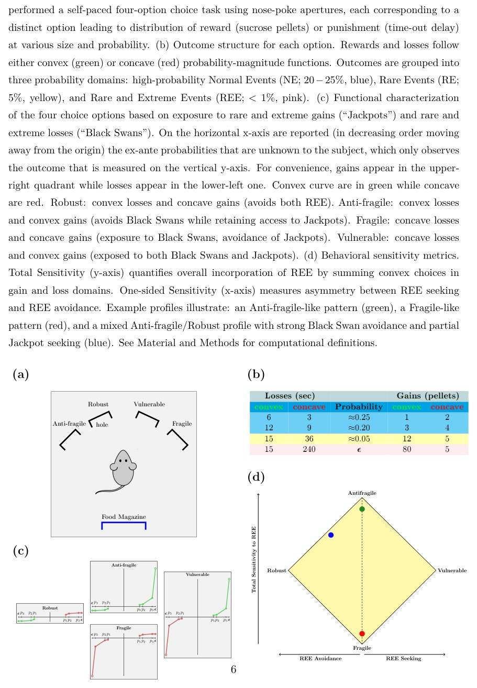
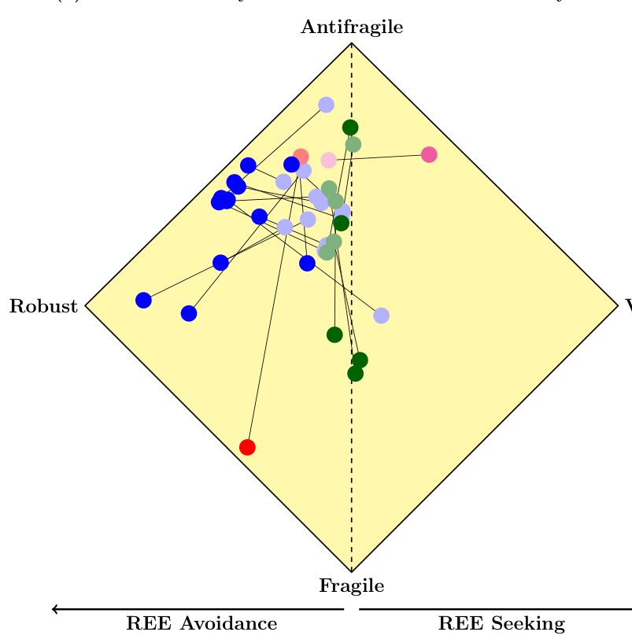
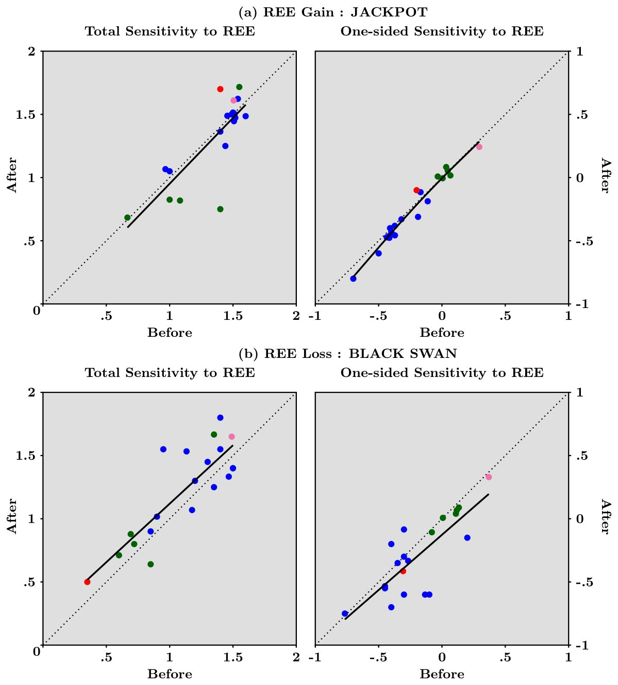
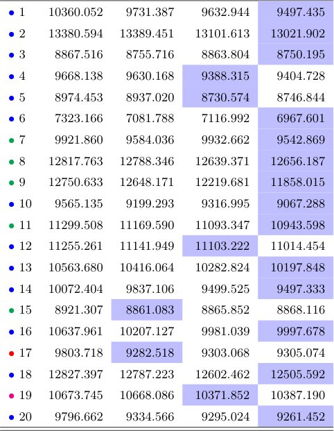
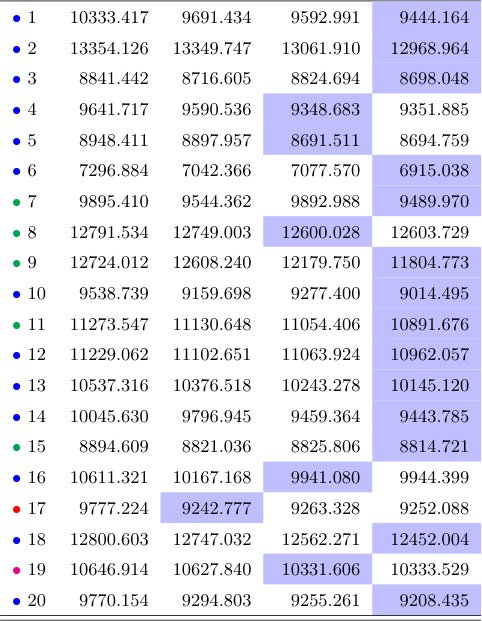
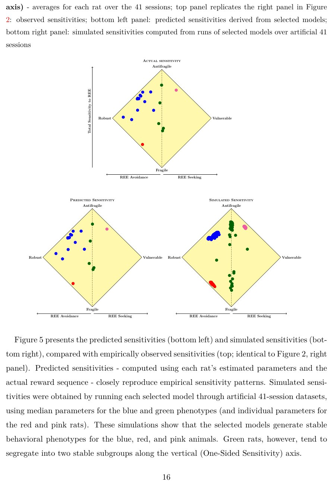
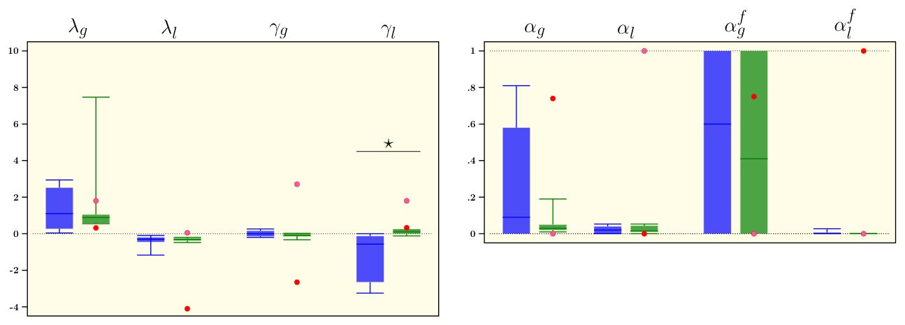
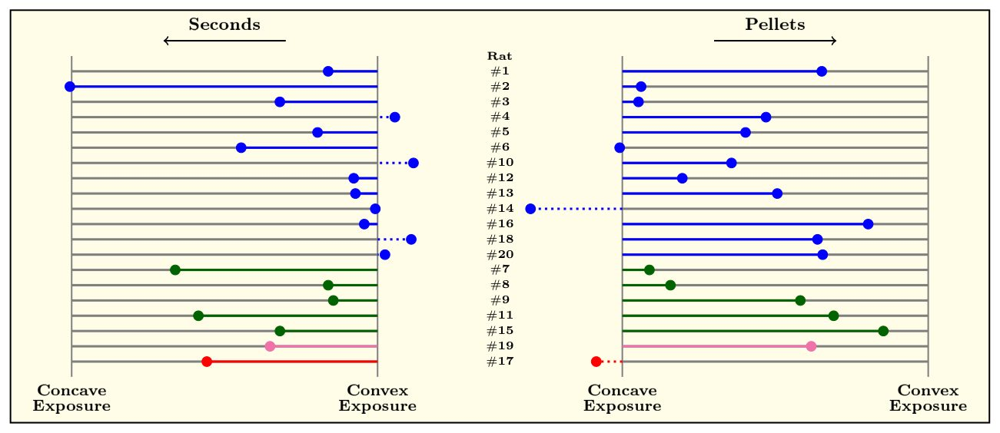
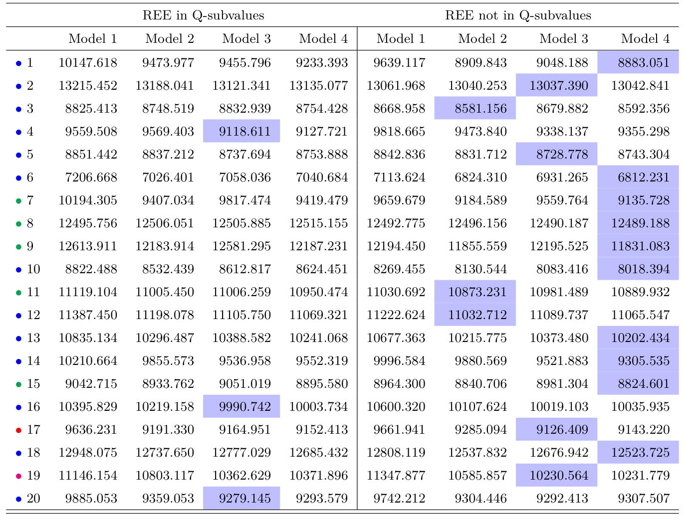

Kalamushлар қоқу қуshlarini qanday chetlab o‘tadi


Rasmning to'liq tavsifi
1-rasm: Eksperimental dizayn. (a) Operant shartlanish kamerasining sxematik tasviri. Sıçanlar mukofot (shakar pechenyelari) yoki jazo (taym-aut kechikishi) tarqatilishiga olib keladigan turli xil o'lcham va ehtimollikka ega bo'lgan har bir variantga mos keladigan burun bilan turtish teshiklaridan foydalangan holda o'z sur'atida to'rt variantli tanlov vazifasini bajardilar. (b) Har bir variant uchun natijalar strukturasi. Mukofotlar va yo'qotishlar qavariq (yashil) yoki botiq (qizil) ehtimollik-kattalik funksiyalariga bo'ysunadi. Natijalar uchta ehtimollik domeniga bo'lingan: yuqori ehtimollikdagi Odatiy Hodisalar (NE; 20–25%, ko'k), Nodir Hodisalar (RE; 5%, sariq) va Nodir va O'ta Hodisalar (REE; <1%, pushti). (c) Nodir va o'ta yutuqlar ("Jekpotlar") va nodir va o'ta yo'qotishlar ("Qora oqqushlar") ta'siriga asoslangan to'rtta tanlov variantining funksional tavsifi. Gorizontal x o'qida sub'ektga noma'lum bo'lgan ex-ante ehtimolliklari (kelib chiqish nuqtasidan uzoqlashganda kamayish tartibida) keltirilgan bo'lib, sub'ekt faqat vertikal y o'qida o'lchanadigan natijani kuzatadi. Qulaylik uchun yutuqlar yuqori o'ng kvadrantda, yo'qotishlar esa pastki chap kvadrantda paydo bo'ladi. Qavariq egri chiziqlar yashil, botiqlar esa qizil rangda. Mustahkam (Robust): qavariq yo'qotishlar va botiq yutuqlar (ikkala REE dan qochadi). Mo'rtlikka qarshi (Anti-fragile): qavariq yo'qotishlar va qavariq yutuqlar ("Jekpotlar"ga kirishni saqlab qolgan holda "Qora oqqushlar"dan qochadi). Mo'rt (Fragile): botiq yo'qotishlar va botiq yutuqlar ("Qora oqqushlar" ta'siri, "Jekpotlar"dan qochish). Zaif (Vulnerable): botiq yo'qotishlar va qavariq yutuqlar (ham "Qora oqqushlar", ham "Jekpotlar" ta'sirida). (d) Xulq-atvor sezuvchanligi metrikasi. Umumiy Sezuvchanlik (y o'qi) yutuq va yo'qotish domenlarida qavariq tanlovlarni jamlash orqali REE ning umumiy kiritilishini miqdoriy jihatdan aniqlaydi. Bir tomonlama Sezuvchanlik (x o'qi) REE qidirish va REE dan qochish o'rtasidagi assimetriyani o'lchaydi. Misol profillari quyidagilarni ko'rsatadi: mo'rtlikka qarshi o'xshash naqsh (yashil), mo'rt o'xshash naqsh (qizil) va kuchli "Qora oqqush" dan qochish va qisman "Jekpot" qidirishga ega aralash mo'rtlikka qarshi/mustahkam profil (ko'k). Hisoblash ta'riflari uchun "Materiallar va usullar" bo'limiga qarang.
Ko‘p tajribalar qarorlarni odatiy sharoitda o‘rganadi, ammo haqiqiy hayotda ehtimoli kam, lekin ulkan oqibatli holatlar ko‘p. Neyrobiologlar kemiruvchilar bunday nodir hodisalarga qanday moslashishini tekshirdi. Ma'lum bo‘lishicha, miya odatiy holatlar va cheksizliklarni bir-biridan ajratib turadi.
Asosiysi
- Kalamushlar nodir jazolardan qochish uchun mayda yo‘qotishlarga rozi bo‘ladi.
- Alohida vaznli model hayvonlar tanlovini yaxshiroq tushuntiradi.
- Miya taqsimot chetlarini odatiy holatlardan alohida qayta ishlaydi.
Batafsil
Klassik xulq-atvor testlarida ehtimolliklar ko‘pincha o‘n foizdan yuqori bo‘ladi. Mualliflar ehtimoli bir foizdan kam va o‘rtacha qiymatdan o‘nta standart og‘ishdan yuqori bo‘lgan nodir hodisalarni (REE) baholash uchun maxsus muhit yaratdi. To‘rt qadamli tanlov testida hayvonlar shakar pelletlari va vaqtni yo‘qotish jazolari o‘rtasida tanlov qildi.
Kemiruvchilarning xulq-atvori aniq assimetriyani ko‘rsatdi. Kalamushlar o‘ta og‘ir jazolarni butunlay chetlab o‘tdi, ammo yirik yutuqlarga qisman intildi. Buning evaziga hayvonlar kichik yo‘qotishlarga chidashga rozi bo‘ldi. Oddiy o‘rganish modellari bunday strategiyani tushuntira olmadi.
Tadqiqotchilar nodir voqealarga alohida vazn beruvchi kengaytirilgan modelni qo‘lladi. Bu kalamush miyasi odatiy taqsimot va uning chetki qismlarini mustaqil baholashini ko‘rsatdi. Bunday bo‘linish hayvonlarga halokatli oqibatlardan qochish imkonini beradi.
Cheklovlar
Tadqiqot laboratoriya kalamushlarida o‘tkazilgan bo‘lib, natijalarni darhol inson qarorlariga tatbiq etib bo‘lmaydi.
Maqolaning batafsil tahlili
Annotatsiya
Metodologiyaning muhim jihati shundaki, tajribadagi hayvonlar rag'batlantirish ehtimolini amalda qanday qabul qilganligi («ex-post»), rejalashtirilgan («ex-ante») qiymatlardan farq qilishi mumkin. Ruxsat etilgan ketma-ketliklar qo'llanilganligi sababli, hayvonlarning real tajribasi nazariy sxemadan sezilarli darajada farq qilishi mumkin edi. Ayrim hayvonlar muayyan variantlar uchun kamdan-kam uchraydigan ekstremal hodisalarga («qora oqqushlar»ga) umuman duch kelmagan bo'lishi ehtimoli mavjud. Jadval S11 ma'lumotlariga ko'ra, kamida 4 ta hayvon bunday natijani butun sessiya davomida faqat bir marta boshdan kechirgan. Bundan tashqari, agar ma'lum bir variantni tanlash tasodifan faqat 10 yoki 60-faollashuvga to'g'ri kelgan bo'lsa, hayvonlar ushbu kam uchraydigan hodisaga muntazam duch kelgan bo'lishi ham mumkin.
Jadval S11. Oxirgi 41 sessiya davomida 20 ta ratning har biri uchun yakuniy natijalar: umumiy statistika
| Rat | Burun turtkilari | Qora Oqqush | Jekpot | Yigindi (mukofotlar) | O'rtacha (mukofotlar) | Dispersiya (mukofotlar) | Asimmetriya (mukofotlar) | Ekssess (mukofotlar) | Yigindi (yo'qotishlar) | O'rtacha (yo'qotishlar) | Dispersiya (yo'qotishlar) | Asimmetriya (yo'qotishlar) | Ekssess (yo'qotishlar) |
|---|---|---|---|---|---|---|---|---|---|---|---|---|---|
| • 1 | 5761 | 3 | 13 | 8399 | 3.08 | 33.05 | 11.54 | 152.99 | 27408 | 9.04 | 67.54 | 22.12 | 618.13 |
| • 2 | 5526 | 13 | 8 | 7622 | 2.92 | 23.13 | 12.88 | 203.11 | 27450 | 9.69 | 274.50 | 12.08 | 166.54 |
| • 3 | 5006 | 6 | 4 | 6896 | 2.92 | 12.48 | 17.82 | 385.26 | 24570 | 9.28 | 147.76 | 15.69 | 294.76 |
| • 4 | 5461 | 1 | 11 | 7833 | 3.04 | 30.05 | 11.97 | 166.29 | 24329 | 8.89 | 31.78 | 24.19 | 980.96 |
| • 5 | 4967 | 3 | 10 | 7157 | 3.05 | 30.24 | 11.86 | 164.03 | 24036 | 9.16 | 77.56 | 20.79 | 540.67 |
| • 6 | 5273 | 6 | 3 | 7212 | 2.90 | 9.18 | 20.11 | 507.29 | 25528 | 9.31 | 133.01 | 17.34 | 345.25 |
| • 7 | 5499 | 14 | 6 | 7542 | 2.93 | 18.13 | 14.12 | 250.85 | 27567 | 9.43 | 312.42 | 10.81 | 139.10 |
| • 8 | 5204 | 9 | 6 | 7258 | 2.95 | 18.42 | 14.37 | 254.07 | 24715 | 9.07 | 238.04 | 11.31 | 165.31 |
| • 9 | 5740 | 10 | 11 | 8288 | 3.06 | 28.51 | 12.30 | 175.47 | 27417 | 9.05 | 230.45 | 11.89 | 177.40 |
| • 10 | 5427 | 1 | 11 | 7721 | 3.00 | 30.38 | 11.83 | 163.40 | 24119 | 8.86 | 31.86 | 24.27 | 986.03 |
| • 11 | 4867 | 15 | 12 | 6997 | 3.10 | 35.59 | 11.47 | 146.92 | 25197 | 9.67 | 353.35 | 10.69 | 129.97 |
| • 12 | 5165 | 4 | 9 | 7092 | 2.95 | 26.97 | 12.41 | 181.89 | 24654 | 9.02 | 98.05 | 18.61 | 429.90 |
| • 13 | 5383 | 2 | 13 | 7620 | 3.02 | 36.87 | 10.66 | 133.35 | 25761 | 9.02 | 56.28 | 20.88 | 631.19 |
| • 14 | 5964 | 1 | 7 | 7822 | 2.81 | 20.19 | 13.09 | 219.91 | 24498 | 8.96 | 30.39 | 23.55 | 972.34 |
| • 15 | 5851 | 6 | 18 | 8366 | 3.06 | 46.40 | 9.61 | 107.29 | 28605 | 9.19 | 125.22 | 17.10 | 349.52 |
| • 16 | 5767 | 2 | 13 | 8187 | 3.04 | 33.07 | 11.69 | 155.14 | 24535 | 8.97 | 48.87 | 23.71 | 777.59 |
| • 17 | 5560 | 14 | 1 | 7393 | 2.85 | 3.72 | 25.03 | 991.18 | 28095 | 9.47 | 303.48 | 11.09 | 145.03 |
| • 18 | 5994 | 2 | 10 | 8354 | 2.99 | 24.77 | 13.38 | 205.37 | 24103 | 8.86 | 56.08 | 19.02 | 570.56 |
| • 19 | 6049 | 10 | 19 | 8416 | 2.98 | 47.69 | 9.46 | 104.24 | 29841 | 9.26 | 200.94 | 13.57 | 218.44 |
| • 20 | 5581 | 1 | 14 | 7927 | 3.04 | 36.55 | 11.20 | 141.46 | 24328 | 8.91 | 31.58 | 23.73 | 962.88 |
Har bir qator bitta ratni bildiradi va rang kodlari 2-rasmda ko'rsatilganidek, hayvonning profilini ko'rsatadi.
Jadval S11 dagi hozirgi ma'lumotlar faqat umumiy ko'rsatkichlarni aks ettiradi va har bir kalamush uchun aniq tanlov variantlari bo'yicha natijalarni batafsil ko'rsatmaydi. Vaziyatni oydinlashtirish uchun to'rtta variantning har biri qanchalik tez-tez tanlanganligini va 6-8 ta mumkin bo'lgan natijalarning taqsimlanishini ko'rsatadigan batafsil jadval zarur. Bundan tashqari, kam uchraydigan natijalarning 10 yoki 60-faollashuvga qat'iy bog'lanishi ularni tasodifiylikdan mahrum qiladi. Mualliflar hayvonlar ushbu qonuniyatni o'rganmagan deb ta'kidlashsa-da, matnda bunga to'g'ridan-to'g'ri dalillar keltirilmagan. Bunga javoban mualliflar taqrizning birinchi bosqichida berilgan batafsil tushuntirishlariga tayanadilar.
Ehtiyot bo'ling
Dizayn cheklovi: kam uchraydigan hodisalarning muayyan bosqichlarda (10 va 60-faollashuvlarda) qat'iy belgilanishi ularni oldindan taxmin qilinadigan qilib qo'yadi, ularga duch kelish chastotasining pastligi esa (Jadval S11 ga ko'ra, 4 ta hayvonda atigi 1 marta) ularning xulq-atvorga ta'sirini baholash adekvatligini shubha ostiga qo'yadi.
Yana bir muhim masala tanlov ma'lumotlarining taqdim etilishi bilan bog'liq. Asosiy materiallarda ushbu ko'rsatkichlar haddan tashqari qayta ishlangan va yig'indi hamda farqlar ko'rinishida taqdim etilgan, to'rtta variantni tanlashning birlamchi chastotalari esa matnda to'g'ridan-to'g'ri ko'rsatilmagan. Jadval S4 ning o'ng qismi eng informativ bo'lib, uning tahlili shuni ko'rsatadiki, barcha reaksiyalarning qariyb 90% (ayniqsa, eng ko'p tarqalgan «ko'k» kalamushlarda) «antimo'rt» (anti-fragile) va «mustahkam» (robust) variantlarga to'g'ri kelgan.
Biroq, aynan shu ikki variant o'rgatish bosqichida eng afzal ko'rilgan fazoviy teshiklar bilan bog'langan edi (26-bet). Bu bartaraf etib bo'lmaydigan ziddiyatni keltirib chiqaradi: tanlov mukofotlarning taqsimlanishi bilan bog'liqmi yoki teshiklarning oddiy fazoviy afzalligi bilanmi, buni aniq aytish qiyin. Mualliflar ushbu e'tirozga javoban o'rgatish va yakuniy sessiyalar o'rtasidagi xulq-atvor dinamikasini ko'rsatuvchi Rasm 8 ga (Materiallar va usullar bo'limi) tayanadilar. Ushbu ma'lumotlarga ko'ra, kalamushlarning yarmidan ko'pi yakuniy testlarda o'z tanlovlari tarkibini o'rgatish bosqichiga nisbatan 30% dan ko'proqqa o'zgartirgan, bu esa oddiy fazoviy odatning saqlanib qolishini emas, balki xulq-atvorning qayta shakllanganini ko'rsatadi.


Rasmning to'liq tavsifi
8-rasm: Yakuniy eksperimental sessiyalarda kuzatilgan tanlovlar вариацияси mashg'ulot sessiyalarida kuzatilganlarga nisbatan («Materiallar va usullar» bo'limining «Eksperimental metod tafsilotlari» qismidagi 3-qadam); (a) panelda REE ga umumiy sezgirlik (y-o'qi) va REE ga bir tomonlama sezgirlik (x-o'qi) вариацияlari ko'rsatilgan, ya'ni to'q rang bilan belgilangan nuqtalar 20 ta ratning har biri uchun 40 ta sessiya davomidagi o'rtacha ko'rsatkichlarni takrorlaydi — 2-rasmdagi (c) panelga qarang — va chiziqlar orqali tegishli to'q rangli nuqtalar bilan bog'langan, och rangli nuqtalar bilan tasvirlangan o'sha rat uchun mashg'ulot sessiyalaridagi o'rtacha ko'rsatkichlar bilan juftlangan; (b) panelda umumiy variatsiya masofasi ko'rsatilgan, ya'ni yakuniy sessiyalardagi burun cho'qishlarini takrorlash uchun mashg'ulot sessiyalaridagi umumiy burun cho'qishlari ulushini o'zgartirish kerak. (a) REE ga umumiy sezgirlik va REE ga bir tomonlama sezgirlik
Muhim
Asosiy xulosa: teshiklarning ehtimoliy fazoviy og'ishiga qaramay, kalamushlarning 50% dan ortig'i yakuniy sessiyada o'rgatish bosqichiga nisbatan o'z afzalliklarini 30% dan ko'proqqa o'zgartirgan (Rasm 8), bu mukofotlar taqsimotiga javoban tanlovning moslashuvchanligidan dalolat beradi.
Taqrizchi statistik xulosalash jarayonlari yetarlicha batafsil bayon etilmaganini ko'rsatib o'tgan. Xususan, matnda erkinlik darajalari (degrees of freedom) va effekt o'lchamlari (effect sizes) ko'rsatilmagan, qo'llanilgan testlar (masalan, butstrepping) haqidagi ma'lumotlar esa juda cheklangan. Vaziyat kodlar va xom ma'lumotlarning yo'lligi bilan yanada murakkablashadi (qo'shimcha materiallarda faqat umumlashtirilgan ko'rsatkichlar keltirilgan). Bundan tashqari, tadqiqot oldindan ro'yxatdan o'tkazilmagan (pre-registration), bu esa mualliflarga tahlil paytida haddan tashqari ko'p erkinlik beradi va post-hoc aniqlangan tasodifiy qonuniyatlarni bo'rttirib ko'rsatish xavfini oshiradi. Taqrizchi, shuningdek, hayvonlarni keyingi solishtirishlar uchun ko'plab kichik guruhlarga bo'lish asoslarini shubha ostiga oladi, chunki bu bo'linishlar oldindan rejalashtirilmaganga o'xshaydi.
Bunga javoban mualliflar ushbu mulohaza avvalgi hisobotdagi (6)-bandni so'zma-so'z takrorlashini va birinchi bosqichdagi javobda unga batafsil to'xtalib o'tishganini, shu sababli joyni tejash maqsadida bu yerda qayta takrorlamasliklarini ta'kidlashadi.
Ehtiyot bo'ling
Tadqiqot protokolining oldindan ro'yxatdan o'tkazilmagani va batafsil statistik ko'rsatkichlarning (erkinlik darajasi, effekt o'lchami) yo'qligi xulosalarning shaffofligini kamaytiradi va natijalarni mustaqil tekshirishni qiyinlashtiradi.
Ikkinchi muhim jihat Rasm 4 da (12-bet) kamdan-kam uchraydigan ekstremal hodisalardan keyingi xulq-atvor tahliliga tegishli. Mualliflar bunday hodisadan oldingi va keyingi 10 ta sinov oynasidagi afzalliklarni baholaganlar. Psixologik adabiyotlarga ko'ra (masalan, Plonsky va boshq., 2015), insonlarda bunday hollarda "yangilikning to'lqinsimon effekti" (wavy recency effect) kuzatiladi: kam uchraydigan natijadan qisqa muddatli qochish (salbiy yangilik) keyinchalik uni faol quvish (ijobiy yangilik) bilan almashadi. Biroq, amaldagi tahlilda kam uchraydigan natijaga ega variantni tanlash boshqa variantlar bilan birlashtirilgan, bu esa haqiqiy manzarani buzadi. Keng 10 ta sinovli oynadan foydalanish bu tebranishlarni yashiradi. Taqrizchi ushbu interval ichida bosqichma-bosqich (trial-by-trial) tahlil o'tkazishni taklif qiladi.

Rasmning to'liq tavsifi
4-rasm: 20 ta sichanning har biri uchun (a) paneldagi "Jekpotlar"dan va (b) paneldagi "Qora oqqushlar"dan keyin, oxirgi 41 seans bo'yicha o'rtacha hisoblangan REE ga umumiy sezuvchanlik va REE ga bir tomonlama sezuvchanlikning javoblari. Har bir nuqta bitta sichanni bildiradi va nuqtalar 2-rasmdagidek hayvonning profilini ko'rsatish uchun ranglar bilan kodlangan. Qora nuqtali chiziqlar REE ta'siridan keyin ta'sir qilishdan oldingiga nisbatan sezuvchanlikda o'zgarish yo'qligini ko'rsatadi. Qora qattiq chiziqlar splayn taxminlarini bildiradi - "Materiallar va usullar"ga qarang.


Mualliflar yana bir bor birinchi bosqichdagi (7)-bandga bergan batafsil javoblariga tayanib, qayta tushuntirishdan bosh tortdilar.
Izoh
Yangilikning to'lqinsimon effekti (wavy recency effect) kamdan-kam uchraydigan hodisadan keyingi tanlovning murakkab dinamikasini tavsiflaydi: dastlab subyekt ushbu variantdan qochadi, so'ngra uni faol ravishda tanlay boshlaydi.
Taqrizchi metodologik xususiyatga e'tibor qaratadi (31-bet): tanlov variantlarini jismoniy joylarga taqsimlash tasodifiy yoki muvozanatlashtirilgan bo'lmagan. Aksincha, asosiy variantlardan biri ataylab hayvonlar dastlab afzal ko'rgan joyga joylashtirilgan. Bu muayyan variant foydasiga bartaraf etib bo'lmaydigan tizimli og'ishni (bias) keltirib chiqaradi va keyingi afzallik tahlillarini chalkashtiradi. Jadval S4 ushbu xavotirni tasdiqlaydi, unda hayvonlar reaktsiyalarining mutlaq ko'pchiligi o'rgatish paytidagi eng afzal ko'rilgan ikkita variant atrofida to'plangan.
Mualliflar ushbu masala (8-band) birinchi bosqichdagi javoblarda batafsil ko'rib chiqilganini ma'lum qilishdi.
Muhim
O'rgatish paytida variantlarning tasodifiy bo'lmagan fazoviy taqsimlanishi reaktsiyalarning eng afzal ko'rilgan ikkita joy foydasiga keskin og'ishiga olib keldi (Jadval S4), bu esa haqiqiy afzalliklarni baholashning xolisligini shubha ostiga qo'yadi.
Oxirgi tanqidiy savol kechikishlarni (delays) yo'qotishlar (losses) bilan tenglashtirish mumkinligi haqidagi farazga tegishli. Mukofot miqdori va kutish vaqti — bu mustaqil ravishda boshqarilishi mumkin bo'lgan mutlaqo boshqacha tajriba parametrlaridir. Matematik modelda (Tenglama 1) ushbu o'tish ochib berilmagan: chiziqli bog'liqlik nazarda tutilganmi yoki yo'qmi, noma'lum. Shuningdek, kechikishlar bitta sessiya doirasidagi umumiy urinishlar sonining kamayishiga olib kelganmi yoki ular shunchaki sessiyani uzaytirib, keyingi tanlovgacha bo'lgan vaqtni cho'zganmi degan savol ochiq qolmoqda.
Mualliflar ushbu band (9) ham avvalgi so'rovni to'liq takrorlashini va unga allaqachon javob berilganini ko'rsatib o'tdilar.
Muhokama davomida taqrizchi bir nechta muhim uslubiy va konseptual masalalarni ko'taradi. Birinchidan, «issiq pechka» effekti va kam uchraydigan falokatli oqibatlardan qochish masalasi muhokama qilinadi, buni mualliflar ilgari «qora oqqushlar» bilan qiyoslagan edilar. Taqrizchining fikricha, agar kalamush uchun barcha variantlar boshida qiymati bo'yicha teng bo'lsa, duch kelingan ilk omadsizlik hayvonning bu variantdan butunlay qochishiga olib kelishi mumkin, holbuki yetarlicha tajriba to'planganda bu variantlar teng qiymatli bo'lib chiqardi. Mualliflar bu punktga birinchi bosqichdagi javoblarida batafsil to'xtalib o'tganini ta'kidlaydilar. Ikkinchidan, Jensen tengsizliklarining kalamushlar xulq-atvorini tushunishga qo'shadigan hissasi shubhaga olinadi; taqrizchining fikricha, bu hayvonlarning real tanlovidan ko'ra generativ taqsimotlarning statistik xususiyatlariga ko'proq mos keladi. Mualliflar yana o'zlarining avvalgi batafsil javoblariga murojaat qilishadi. Uchinchidan, taqrizchi ma'lumotlarning ochiqligini ijobiy baholaydi, biroq natijalarni takrorlashni tekshirish uchun dasturiy kod ham so'rov bo'yicha emas, balki to'g'ridan-to'g'ri hammaga ochiq bo'lishi shartligini talab qiladi. To'rtinchidan, kam uchraydigan hodisalar terminologiyasi ko'tariladi: taqrizchi 10% dan kam ehtimollikka ega adabiyotlarda allaqachon «noyob xazinalar» va «noyob falokatlar» kabi tushunchalar mavjudligini ko'rsatib o'tadi.
Muhim
Taqrizchi kodning ochiqligini ta'minlash, atamalarni aniqlashtirish va grafiklar dizaynini yaxshilash zarurligini ta'kidlaydi, mualliflar esa tajriba dizaynining o'ziga xos xususiyatlarini tushuntirib o'tadilar.
Beshinchidan, xulq-atvorni tushuntirishda «qavariq» va «botiq» matematik atamalaridan foydalanish tanqid qilinadi, chunki bu yutuq va yo'qotishlar nuqtai nazaridan nima qilinganini tushunishni qiyinlashtiradi. Shuningdek, 5-sahifadagi «Umumiy sezuvchanlik» ta'rifi Rasm 1B dagi qavariqlikka mos kelmasligi ko'rsatib o'tiladi. Oltinchidan, Rasm 1C dagi grafik dizayni tanqid qilinadi: taqrizchining fikricha, ehtimolliklar kelib chiqish nuqtasidan ikki tomonga qarab o'sishi va yashil-qizil ranglar kodirovkasi g'alaba/mag'lubiyatni emas, balki qavariqlik/botiqlikni bildrishi tushunarsiz. Bunga javoban mualliflar Rasm 1 dagi (c) panel dizaynning muhim xususiyatini ko'rsatishini tushuntiradilar: ehtimollik kamayishi bilan yutuq va yo'qotishlar qavariq yoki botiq bo'ladi, ya'ni hodisa noyoblashgani sari uning miqdori nolinear tarzda kattalashadi yoki kichiklashadi. Ettinchidan, muhokama qismida taqrizchi odamlar va kalamushlar o'rtasidagi asosiy farq odamlarning bunday «qora oqqush» holatlarini boshdan kechirmasdan, faqat eshitishi bilan bog'liqligini ta'kidlaydi. Mualliflar esa insonlarning hayotdagi travmalari ushbu eksperimental dizayndagi qora oqqushlar bilan o'xshash xususiyatlarga ega ekanligini ta'kidlab o'tadilar.
Rasmning to'liq tavsifi
1-rasm: Eksperimental dizayn. (a) Operant shartlanish kamerasining sxematik tasviri. Sıçanlar mukofot (shakar pechenyelari) yoki jazo (taym-aut kechikishi) tarqatilishiga olib keladigan turli xil o'lcham va ehtimollikka ega bo'lgan har bir variantga mos keladigan burun bilan turtish teshiklaridan foydalangan holda o'z sur'atida to'rt variantli tanlov vazifasini bajardilar. (b) Har bir variant uchun natijalar strukturasi. Mukofotlar va yo'qotishlar qavariq (yashil) yoki botiq (qizil) ehtimollik-kattalik funksiyalariga bo'ysunadi. Natijalar uchta ehtimollik domeniga bo'lingan: yuqori ehtimollikdagi Odatiy Hodisalar (NE; 20–25%, ko'k), Nodir Hodisalar (RE; 5%, sariq) va Nodir va O'ta Hodisalar (REE; <1%, pushti). (c) Nodir va o'ta yutuqlar ("Jekpotlar") va nodir va o'ta yo'qotishlar ("Qora oqqushlar") ta'siriga asoslangan to'rtta tanlov variantining funksional tavsifi. Gorizontal x o'qida sub'ektga noma'lum bo'lgan ex-ante ehtimolliklari (kelib chiqish nuqtasidan uzoqlashganda kamayish tartibida) keltirilgan bo'lib, sub'ekt faqat vertikal y o'qida o'lchanadigan natijani kuzatadi. Qulaylik uchun yutuqlar yuqori o'ng kvadrantda, yo'qotishlar esa pastki chap kvadrantda paydo bo'ladi. Qavariq egri chiziqlar yashil, botiqlar esa qizil rangda. Mustahkam (Robust): qavariq yo'qotishlar va botiq yutuqlar (ikkala REE dan qochadi). Mo'rtlikka qarshi (Anti-fragile): qavariq yo'qotishlar va qavariq yutuqlar ("Jekpotlar"ga kirishni saqlab qolgan holda "Qora oqqushlar"dan qochadi). Mo'rt (Fragile): botiq yo'qotishlar va botiq yutuqlar ("Qora oqqushlar" ta'siri, "Jekpotlar"dan qochish). Zaif (Vulnerable): botiq yo'qotishlar va qavariq yutuqlar (ham "Qora oqqushlar", ham "Jekpotlar" ta'sirida). (d) Xulq-atvor sezuvchanligi metrikasi. Umumiy Sezuvchanlik (y o'qi) yutuq va yo'qotish domenlarida qavariq tanlovlarni jamlash orqali REE ning umumiy kiritilishini miqdoriy jihatdan aniqlaydi. Bir tomonlama Sezuvchanlik (x o'qi) REE qidirish va REE dan qochish o'rtasidagi assimetriyani o'lchaydi. Misol profillari quyidagilarni ko'rsatadi: mo'rtlikka qarshi o'xshash naqsh (yashil), mo'rt o'xshash naqsh (qizil) va kuchli "Qora oqqush" dan qochish va qisman "Jekpot" qidirishga ega aralash mo'rtlikka qarshi/mustahkam profil (ko'k). Hisoblash ta'riflari uchun "Materiallar va usullar" bo'limiga qarang.
Mualliflar 4 va 7-sahifalarda terminologiyani aniqlashtiradilar: to'rtta variantdan ikkitasini tez-tez tanlash bu ikkita strategiyani tanlash emas, shunchaki ikkita variantni tanlashni anglatadi va matn tegishli tarzda o'zgartirildi. Yig'indisi birga teng bo'lgan aniq natijalar ehtimolliklari (masalan, ilgari tilga olingan 0.9, 0.1, 0.01) hamda ε parametrining aniq ta'rifi 29-sahifadagi «Materiallar va usullar» bo'limida keltirilgan. Kam uchraydigan ekstremal natijalarga moyillikni tavsiflovchi «bir tomonlama sezgirlik» (one-sided sensitivity) atamasi 5–6-sahifalarda va 1-rasm osti yozuvida tushuntirilganidek, tanlov assimetriyasining taklif etilgan o'lchovi sifatida saqlab qolindi, garchi mualliflar «uchrashuv», «tanlov» yoki «afzallik» kabi boshqa sinonimlarni ham qo'llash mumkinligini tan olishsa ham.
3-rasmni muhokama qilar ekan, mualliflar uning intuitivroq ekanligi da'vo qilinmaganini, balki 33–34-sahifalarda tushuntirilganidek, xatti-harakatlarni ifodalashning muqobil usuli (BSA/JPS va TSREE/OSREE) bo'lib xizmat qilishini ta'kidlaydilar. 3-rasmning dizayniga qilingan tanqidga javoban mualliflar to'q kulrang va och rangli ustunlar yig'indisi birga teng ekanligini, lekin 10–11-sahifalarda ko'rsatilganidek, har xil talqinlarga ega ekanligini tushuntirib o'tdilar va bitta yulduzcha haqidagi havola olib tashlandi. 14-sahifedagi matematik parametrlarga kelsak, mualliflar α parametrining bir bilan cheklanishi stoxastik yaqinlashish uchun muhimligini, 1 va 2 orasidagi qiymatlar эsa Q qiymatlarining istalmagan tebranishlariga olib kelishi mumkinligini ta'kidlaydilar.
Muhim
Parametrlar va modellarni aniqlashtirish: S5, S6 va S7 jadvallarini tahlil qilish shuni ko'rsatdiki, 3, 11 va 12-kalamushlar uchun tanlangan modellar REE ni Q pastki qiymatlariga integratsiya qilmaydi, 4, 16 va 20-kalamushlar uchun esa ular Q qiymatlari va REE qaror og'irliklari orqali integratsiya qilinadi.
Yutuq va mag'lubiyatlarni keltirib chiqaruvchi chastota (barcha natijalarning yarmidan kamrog'ini tashkil etadi) qo'shimcha materialda batafsil tavsiflangan. Sessiyalar sonidagi nomuvofiqlik (4-sahifada 41 sessiya, metodlarda va 7-rasmda 40 sessiya deb ko'rsatilgan) matnda tuzatildi. S7 jadvali yuzasidan mualliflar unda BIC mezoni bo'yicha tanlangan modellar uchun barcha baholangan parametrlar, shu jumladan α uchun ruxsat etilgan 0 va 1 chegaraviy qiymatlari, shuningdek ustunlar tartibining to'g'rilangani (yutuq endi birinchi o'rinda) keltirilganligini tasdiqlaydilar. Va nihoyat, S11 jadvalida muayyan variantlar bo'yicha tafsilotlar berilmaganini mualliflar har bir kalamush tomonidan hosil qilingan burun turtishlarining (nosepokes) katta soni bilan izohlaydilar, biroq tanlovchilik chastotalari yuqori bo'lgani sababli (S2 jadval, 52-bet) har bir kalamush har bir variantning natijalar taqsimoti bilan albatta to'qnash kelganini ta'kidlaydilar.
Natijalar
To'rtta richagli bandit vazifasida kam uchraydigan va ekstremal hodisalarga nisbatan sezuvchanlik o'lchovlari
Kalamushlar to'rtta burun tiqish porti (nose-poke ports) bilan jihozlangan operant kamerada sinovdan o'tkazildi, ularning har biri sessiyalar davomida belgilangan jadvaldan olingan mukofotlar (saxaroza peletlari) va jazolar (taym-аut kechikishlari) taqsimotiga ulangan edi (1a-rasm). Treningdan so'ng hayvonlar 41 ta eksperimental sessiyani yakunladilar (sessiya vaqti 20 min; bir sessiyada ≈ 120 ta urinish). 1b-rasmda ko'rsatilganidek, ijobiy natijalar saxaroza peletlaridan iborat bo'lgan, salbiy natijalar эsa portlar faol bo'lmagan va pelet olishning oldini olgan taym-аut davrlariga to'g'ri kelgan. Har bir tanlov opsiyasi natija kattaligi va hodisa ehtimolligi o'rtasidagi o'ziga xos mos kelish bilan aniqlangan.
Hodisa ehtimolligi kamayishi bilan natija kattaligi qavariq (tezlashuvchi; yashil) yoki botiq (sekinlashuvchi; qizil) funksiyalarga ergashishi mumkin edi (1b-c-rasmlar). Eng muhimi, barcha opsiyalar natija sinflari spektrini o'z ichiga olgan: yuqori ehtimolli Normal Hodisalar (Normal Events, NE; ≈ 90%), Kam uchraydigan Hodisalar (Rare Events, RE; ≈ 10%), shuningdek, Kam uchraydigan va Ekstremal Hodisalar (Rare and Extreme Events, REE; ≈ 1%), ular o'ta yirik mukofotlarga ("Jekpotlar": 80 ta pelet) yoki o'ta yirik jazolarga ("Qora oqqushlar": 240 soniyalik kechikish) mos kelgan. Qavariq yoki botiq yutuq va yo'qotish funksiyalarining birikishi to'rtta alohida opsiyani hosil qildi (Anti-fragile, Robust, Vulnerable va Fragile; 1c-rasm).
Antihrom (Anti-fragile) opsiya qavariq yutuqlarni qavariq yo'qotishlar bilan birlashtirib, Jekpotlarga duch kelishga, lekin Qora oqqushlardan qochishga imkon berdi. Mo'rt (Fragile) opsiya botiq yutuqlar va botiq yo'qotishlarni birlashtirib, kichik tekislangan mukofotlarni berdi, ammo hayvonlarni ekstremal yo'qotishlarga (Qora oqqushlar) duchor qildi. Mustahkam (Robust) va Zaif (Vulnerable) opsiyalar bir-birini to'ldiruvchi naqshlarni ko'rsatdi: Robust Qora oqqushlardan qochdi, lekin Jekpotlarga kirishni ham oldini oldi, Vulnerable esa hayvonlarni ikkala ekstremal natijaga ham duchor qildi.
Izoh
To'rtta richagli bandit va REE: bu usul hayvonlarning ehtimollik sharoitida mukofotlar va xavflarni qanday taqsimlashini o'lchashga yordam beradi.
Asosiy fenotip: ekstremal mukofotlarni qisman sinab ko'rgan holda ekstremal jazolardan kuchli qochish
Biz 20 ta kalamushdan 41 ta kundalik sessiya davomida to'plangan xulq-atvor ma'lumotlarini tahlil qildik (Material va usullarga qarang). Hayvonlar qabul qilgan xulq-atvor strategiyalarining asosiy xususiyatlarini yoritish uchun 2-rasmda har bir kalamushning tanlovi REE ga umumiy sezuvchanlik va Bir tomonlama sezuvchanlik bilan aniqlangan ikki o'lchamli fazoda tasvirlangan. 2-rasmning birinchi tekshiruvi shuni ko'rsatadiki, hech bir hayvon bitta cho'qqida ishlamaydi — ya'ni birorta ham kalamush faqat bitta kontingensiyaga sodiq qolmaydi. Buning o'rniga, barcha hayvonlar bir nechta opsiyalardan foydalanadilar.
Populyatsiya darajasidagi naqshlar
2a-panel to'liq ma'lumotlar to'plamini ko'rsatadi (≈ 800 ta sessiya nuqtasi). Ko'pgina sessiyalar xulq-atvor fazosining chap yarmida joylashgan bo'lib, bu REE dan qochadigan strategiyalarga mos keladi. Ushbu domenda ko'pgina sessiyalar yuqori kvadrantga tushadi, bu o'rtacha va yuqori umumiy sezuvchanlikni bildiradi — ya'ni kalamushlar o'z tanlovlarini ekstremal yo'qotishlarni (Qora oqqushlar) minimallashtirish orqali tizimli ravishda o'zgartirgan.
Muhim
Populyatsiya darajasi: sessiyalarning aksariyati chap yuqori kvadrantda joylashgan bo'lib, bu ekstremal voqealarga nisbatan yuqori sezuvchanlik va yo'qotishlardan qochish moyilligini bildiradi.
Individual xulq-atvor profillari
2b-panel har bir alohida kalamushning 41 sessiya davomidagi naqshini ko'rsatadi. Har bir kvadrat bitta kalamushga mos keladi, to'rtta cho'qqi esa to'rtta mumkin bo'lgan natija taqsimotini bildiradi (A: Antifragil; R: Robust; V: Zaif; F: Mo'rt). Bitta hayvon (17-kalamush, qizil) bundan mustasno, barcha kalamushlar o'rtacha va yuqori umumiy sezuvchanlikni ko'rsatadi. Qolgan 18 ta hayvon ikkita barqaror fenotipga bo'linadi: 1) Ko'k guruh (13 ta kalamush): asosiy ravishda Robust va Antifragil opsiyalari o'rtasida tebranishadi. Bu fenotip (i) o'rtacha va yuqori umumiy sezuvchanlikni (ii) Qora oqqushlardan yaqqol qochish bilan birlashtiradi. 2) Yashil guruh (5 ta kalamush): ular Fragile va Antifragil opsiyalarini almashtirib turishadi. Ular umumiy sezuvchanlikni ko'rsatadilar, ammo bir tomonlama sezuvchanlikda yo'nalishli bias ko'rsatmaydilar.
O'rtacha fenotiplar
2c-rasm har bir kalamushning sessiyalar bo'yicha o'rtacha ko'rsatkichlarini jamlaydi. To'rtta kalamushdan tashqari barchasi maksimal qiymatning yarmidan yuqori umumiy sezuvchanlikni ko'rsatadi; uchtasi birga yaqin, bittasi (17-kalamush) 0.5 atrofida turibdi. Jami 19 ta kalamush REE mavjudligiga aniq sezuvchanlikni ko'rsatadi. 17 va 19-kalamushlar qarama-qarshi chiqishlardir: 17-kalamushda umumiy sezuvchanlik past, 19-kalamushda esa eng yuqori sezuvchanlik va kuchli Jekpot qidirish kuzatiladi.
Ehtiyot bo'ling
Cheklov: natijalar 20 ta kalamushdan iborat kichik tanlamaga va sun'iy laboratoriya sharoitlariga asoslangan.
Umumiy va bir tomonlama sezgirlik o'rtasidagi munosabatlar tuzilishi
2c-panelning diqqatga sazovor xususiyati shundaki, umumiy sezgirlik (Total Sensitivity) va eng yuqori umumiy sezgirlikka ega 16 ta kalamush orasidagi bir tomonlama sezgirlik (One-sided Sensitivity) o'rtasida ijobiy bog'liqlik mavjud. Ushbu yuqori sezuvchanlik guruhida o'z tanlovida REE (kam uchraydigan hodisalar) ni kuchliroq hisobga oladigan hayvonlar «Qora oqqushlar»dan qochishning kamayishini ko'rsatishga moyil (ya'ni ularning bir tomonlama sezgirligi kamroq manfiy bo'lib qoladi). Bu siljish yutuqlar sohasida yo'qotishlar sohasiga nisbatan qavariqlik tomon bosqichma-bosqich og'ishini aks ettiradi. 19-kalamush umumiy sezgirlik va jackpot qidirishning maksimal birikmasiga yaqinlashadigan ekstremal holatni bildiradi. Bu munosabat statistik tarzda tasdiqlangan: 20 ta kalamushdan iborat to'liq ma'lumotlar to'plamida o'rtacha umumiy va bir tomonlama sezgirlik o'rtasidagi korrelyatsiya nolga yaqin. Biroq, tahlilni 16 ta yuqori sezgir kalamush bilan cheklash ≈ 0.57 miqdoridagi korrelyatsiyani beradi.
Muhim
Yuqori sezgir 16 ta kalamushda umumiy va bir tomonlama sezgirlik o'rtasidagi bog'liqlik vaqt o'tishi bilan kuchayib, korrelyatsiya ≈ 0.17 dan ≈ 0.64 gacha oshadi.
Mukofot qidirish va jazodan qochishning xulq-atvor o'lchovlari
3-rasmda yanada intuitiv xulq-atvor metrikalari keltirilgan: (i) «Qora oqqush»lardan qochadigan va (ii) jackpotlarni qidiradigan tanlovlarning ulushi (batafsil hisob-kitoblar Materiallar va usullarda keltirilgan). Mediana qiymatlari ikki fenotip o'rtasidagi keskin tafovutni ko'rsatadi. Ko'k kalamushlarning yarmiga yaqini urinishlarning > 90% qismida ekstremal jazolardan qochadi, yashil kalamushlarning esa atigi ≈ 40% qismi va biron bir autlayer shunday qochish darajasiga erishmaydi. Buning aksicha, jackpot qidirish ko'k va yashil kalamushlar o'rtasida farq qilmaydi. Uilkokson juftlik testlari buni tasdiqlaydi: ko'k kalamushlar jazodan qochish va mukofot qidirish o'rtasida sezilarli darajada farqlanadi (p = 0.0002), yashil kalamushlar esa farqlanmaydi (p = 0.6250). Aniq qiymatlar qo'shimcha materiallarda berilgan.
Izoh
Uilkokson testi juftlashtirilgan guruhlarni taqsimot normalligini talab qilmagan holda taqqoslash uchun ishlatiladigan noparametrik usuldir.
REE ta'siri va ta'sir qilmasligi: «Qora oqqush» natijalari kam uchraydigan va ekstremal hodisalarga sezgirlikni kuchaytiradi, jackpotlar esa bunday qilmaydi
Ko'pchilik hayvonlar (19/20) REE ga o'rtacha va yuqori umumiy sezgirlikni hamda ekstremal jazolardan («Qora oqqushlar») mustahkam qochishni ko'rsatishini aniqlagandan so'ng, REE ning haqiqiy tajribasi bitta sessiya doirasida keyingi tanlov xulq-atvorini qanday shakllantirishi o'rganildi. Xususan, har bir kalamushning REE gacha bo'lgan 10 ta burun turtishdagi (nose-poke) xulq-atvor sezgirligi undan keyingi 10 ta burun turtish bilan taqqoslandi. 4-rasm ushbu dinamikani jamlaydi. Har bir kalamush uchun 4a-panelda jackpot tajribasining ta'siri, 4b-panelda esa «Qora oqqush» bilan uchrashish ta'siri ko'rsatilgan. Umumiy sezgirlik chap ustunda, bir tomonlama sezgirlik esa o'ng ustunda joylashgan. Nuqtali diagonal o'zgarish yo'qligini bildiradi.
Ehtiyot bo'ling
Olingan xulq-atvor natijalari kema modellariga (kalamushlarga) asoslangan bo'lib, ularni bevosita inson qarorlarini qabul qilish jarayonlariga ko'chirish ehtiyotkorlikni talab qiladi.
Aniq assimetriya namoyon bo'ladi: jackpotlar har ikki metrikada minimal o'zgarish hosil qiladi va ko'pchilik nuqtalar diagonalga yaqin yotadi. Aksincha, «Qora oqqush» natijalari xulq-atvorni tizimli ravishda siljitadi. Hayvonlarning ko'pchiligi umumiy sezgirlikning oshishini — ya'ni ular kam uchraydigan hodisalar tuzilishiga nisbatan sezgirroq bo'lishlarini — hamda bir tomonlama sezgirlikning pasayishini ko'rsatadi. Ikkala o'lchov bo'yicha ham nuqtalar 45^° chizig'idan yuqorida yoki pastda guruhlanadi, bu jazodan keyin REE bilan bog'liq xulq-atvor og'irligining barqaror kuchayishini bildiradi. Shunday qilib, kam uchraydigan og'ir yo'qotishlar hayvonlarning REE ga sezgirligini keskin kuchaytiradi.
Bu naqsh kalamushlarning ekstremal salbiy natijalardan qochishga ustuvor ahamiyat berishi haqidagi umumiy xulosamizga mos keladi. Bootstrap statistikasi va qo'shimcha testlar ushbu effektlarning ahamiyatini tasdiqlaydi. Xulosa qilib aytganda, sessiya ichidagi tahlillar kuchli valentlik assimetriyasini ochib beradi: «Qora oqqush» hodisalari REE ga nisbatan global sezgirlikni va kam uchraydigan yo'qotishlardan qochish moyilligini vaqtincha kuchaytiradi, jackpotlar эsa xulq-atvor sezgirligini o'lchanadigan darajada o'zgartirmaydi.
Q-Learning models require specific REE decision weights to mimic rats’ behavior
Kalamushlarning xatti-harakatlarini modellashtirish uchun tadqiqotchilar kengaytirilgan kuchaytirilgan o‘qitish (Reinforcement Learning) modellarining yangi sinfini qo‘lladilar va har bir hayvonning tanlovlari hamda natijalari asosida ularning parametrlarini baholadilar. Tanlangan modelning asosiy xususiyati shundan iboratki, u qabul qilish jarayonida maxsus vaznlar yordamida odatiy va kam uchraydigan ekstremal natijalarni ajratib turadi. Bunday sezgirlikning kiritilishi modelning yaxshi mos kelishini ta'minlaydi, REE ga sezgirligi bo'lmagan standart Q-learning modeli esa deyarli barcha kalamushlar uchun rad etiladi.
Tenglamalardagi (1) 1 dan 4 gacha bo'lgan o indeksi bilan belgilangan to'rtta mavjud variantning har biri uchun (Antifragile, Fragile, Robust, Vulnerable) har bir sinov/vaqt momentida yutuq kichik qiymati Q_g^t(o) va yo'qotish kichik qiymati Q_l^t(o) biriktiriladi. Ularni yangilash quyidagicha tavsiflanadi:
Q_g^t+1(o) - Q_g^t(o) = α_g × [r_g^t(o) - Q_g^t(o)] Q_l^t+1(o) - Q_l^t(o) = α_l × [r_l^t(o) - Q_l^t(o)]
bu yerda α_g va α_l parametrlari o'qitish tezligi deb ataladi. Agar o'qitish tezligi nolga teng bo'lsa, yangilanish sodir bo'lmaydi; birga teng bo'lsa, kichik qiymat olingan mukofotning o'zini aks ettiradi. Tanlanmagan uchta variant uchun unutish stavkalari αfg va αfl bo'lgan qoidalar qo'llaniladi: Q_g^t+1(o) = (1 - αfg)Q_g^t(o) va Q_l^t+1(o) = (1 - αfl)Q_l^t(o).
Izoh
Q-learning va o'qitish tezligi — bu hayvon yoki model so'nggi tajribaga asoslanib o'z kutishlarini qanchalik tez o'zgartirishini ko'rsatadigan mashinaviy o'qitish algoritmi va parametrlardir.
Kengaytirilgan Q-learning modelining yangi jihati, yutuq va yo'qotishlarni birlashtirishdan tashqari, kam uchraydigan ekstremal voqealarni (REE) keltirib chiqarishi mumkin bo'lgan variantlarga maxsus vaznlarning biriktirilishidir. Har bir variantning qiymati V_t(o) (2)-tenglamada ikkita hadning yig'indisi sifatida modellashtiriladi. Birinchi had yutuq va yo'qotish kichik qiymatlariga biriktirilgan qaror qabul qilish vaznini hisobga oladi (λ_g va λ_l). Ikkinchi va asosiy had REE ga biriktirilgan qaror vaznlarini o'z ichiga oladi va u o'z navbatida «Jekpotlar» hamda «Qora oqqushlar» uchun vaznlarga bo'linadi.
Indikator funksiyasi 1JP(o) agar tanlangan variant Jekpotlarga duch kelsa (A yoki V) birga, aks holda nolga teng bo'ladi. Xuddi shunday, 1BS(o) varianti Qora oqqushlarga ta'sir qilganda birga teng bo'ladi.
Muhim
Kalamushlarning xatti-harakatlarini taqlid qilish uchun odatiy natijalarni ekstremal Jekpotlar va Qora oqqushlardan ajratib turuvchi REE uchun maxsus qaror vaznlariga ega Q-learning modellari talab qilinadi.
Muhokama
Nodir ekstremal yo'qotishlar va yutuqlarga nisbatan nosimmetrik xulq-atvor reaksiyalari
Biz birinchidan, tanlanmamizdagi barcha kalamushlar REE ga nisbatan qandaydir darajada sezgirlik ko'rsatganini, ko'pchilik hayvonlar o'rtachadan yuqorigacha sezgirlik namoyon etganini ko'rsatdik. Ikkinchidan, biz "Qora oqqushlar" dan deyarli to'liq qochish va "Jekpot" ni qisman qidirish bilan tavsiflangan ustun xulq-atvor fenotipini aniqladik. Mualliflar ushbu topilmalarni salbiy va ijobiy REE o'rtasidagi fundamental nosimmetriklik sifatida izohlaydilar, garchi ba'zi shartlar mavjud bo'lsa ham. To'yingizlik "Jekpot" ni to'liq qidirishning yo'qligiga ta'sir qilganini butunlay istisno qilib bo'lmasa-da, biz "Jekpot" izlashni to'xtatgan hayvonlarni muntazam ravishda kuzatmadik. Nodir natijalarni seans davomidagi 10-chi yoki 60-chi faollashuv bilan cheklaganimiz sababli (Qo'shimcha materiallardagi S1-jadval), hayvonlar bu bog'liqlikni o'rganganmi degan savol tug'ilishi mumkin. Agar hayvonlar 10- va 60-faollashuvlarni o'rganganda edi, ular kuzatilganidan ko'ra ko'proq optimallashtirilgan tanlov strategiyasini namoyon etgan bo'lar edi. Masalan, "Jekpot" olish imkoniyatini beruvchi optsiyalar tez-tez sodir bo'ladigan voqealar nuqtai nazaridan daromad bo'yicha optimal emas, shuning uchun hayvonlar bu optsiyalarni faqat 10- va 60-tanlovlar atrofida tanlashga intilishlari kerak edi. Ularning boshqa tanlovlarining ko'pi tez-tez uchraydigan sohada katta daromad keltiruvchi optsiyalarni afzal ko'rishi kerak edi. Biroq, kuzatilgan holat bundan farq qiladi.
Muhim
Kalamushlar "Qora oqqushlar" dan deyarli to'liq qochish va "Jekpot" larni qisman qidirishni birlashtiruvchi fenotipni namoyon etadi, bu esa kam uchraydigan yo'qotishlar va yutuqlarni idrok etishdagi nosimmetriklikni aks ettiradi.
Bizning vazifamizda "Qora oqqushlar" dan qochish tez-tez sodir bo'ladigan uzoqroq kechikishlarni qabul qilishni talab qiladi, "Jekpot" larni qidirish esa tez-tez keladigan kattaroq daromadlardan voz kechishni talab qiladi. Shunga qaramay, kalamushlar qavariq zarar jadvallarini tanlash orqali "Qora oqqushlar" dan qochishni kafolatlashi mumkin, bu esa bunday optsiyalarni nisbatan jozibali qiladi. Aksincha, hech qanday tanlov ketma-ketligi "Jekpot" kelishini kafolatlay olmaydi - uning ro'yobga chiqishi kam uchraydigan tasodifiy tanlovlarga bog'liq. Misol uchun, agar seansda 150 ta tanlov qilinsa (kuzatilgan diapazonda) va dastlabki REE ehtimolligi 1% bo'lsa, Puasson yaqinlashuvi ayniqsa bitta REE ni kuzatish ehtimolligini ≈78% deb beradi, ya'ni nolga teng bo'lish ehtimoli ham kam emas. Demak, bizning dizaynimiz kengroq miqyosda ijobiy va salbiy REE larga xos bo'lgan umumiy nosimmetriklikni qamrab oladi: ekstremal yo'qotishlardan qochish mumkin bo'lsa-da, hatto doimiy optimal qidirishda ham ekstremal yutuqlarni ta'minlab bo'lmaydi. Bu nosimmetriklik tanlov xulq-atvoriga muhim ta'sir ko'rsatadi. Kalamushlar mahalliy optimal sifatida botiq optsiyalarga ishora qiluvchi dalillar oqimini doimiy ravishda boshdan kechiradi. Xususan, "Mo'rt" (Fragile) optsiyasi yuqori tez-tez daromadlar va kichikroq tez-tez yo'qotishlarni keltirib chiqaradi hamda REE sodir bo'lmaganda boshqa optsiyalardan ustun keladi. Garchi "Mo'rt" optsiyasi "Mo'rtlikka qarshi" (Anti-fragile) bilan solishtirganda "Qora oqqush" va "Jekpot" sodir bo'lganda ustunlikni yo'qotsa-da, "Qora oqqush" dan to'liq qochish ekstremal yo'qotishlardan deyarli aniq himoyani ta'minlaydi. Bu esa tez-tez uchraydigan sohada stoxastik ustunlikni buzishiga qaramay, "Anti-fragile" va "Robust" optsiyalarini birlashtiruvchi strategiyalarni jozibali qiladi. Aksincha, "Jekpot" larni to'liq qidirish uning ro'yobga chiqishini ta'minlay olmagani uchun unchalik jozibali emas; aksariyat sinovlarda kichikroq daromadlarni olish xarajati, agar kompensatsiya qiluvchi ekstremal mukofot haqiqatan ham paydo bo'lmasa, oqlanmaydi. Shuning uchun qisman "Jekpot" qidirish muvozanatliroq strategiya sifatida yuzaga chiqadi.
Izoh
Stoxastik ustunlik — bir strategiya boshqasidan har qanday sharoitda ham obyektiv ravishda ustun bo'lish holati bo'lib, hayvonlar tez-tez uchraydigan kichik mukofotlar va nodir katta tavakkallar o'rtasida muvozanat saqlaydi.
Bizning natijalarimiz shuni ko'rsatadiki, "ko'k" kalamushlar ushbu xususiyatni o'rganib chiqqan bo'lib, "Qora oqqush" dan deyarli to'liq qochish va "Jekpot" larni qisman qidirish uchun "Robust" va "Anti-fragile" optsiyalarini birlashtirgan. Aksincha, "yashil" kalamushlar "Anti-fragile" va "Fragile" optsiyalarini aralashtirishda davom etib, ularni "Qora oqqush" larga nisbatan ochiq qoldiradi. Qizig'i shundaki, kalamushlar bitta tanlovda qolib ketmasdan, o'z strategiyasida qandaydir moslashuvchanlikni ko'rsatgani uchun, bu ularning javobidagi asosiy omil sifatida fazoviy moyillik ta'sirini istisno qiladi. Qolaversa, vazifa dizayni ikki jihatdan qiyofalangan edi: o'qish davomidagi sevimli teshik konsepsiya isboti sifatida "anti-fragile" optsiyasiga ajratilgan edi va REE mos optsiy tanlansa, 10-chi va 60-chi tanlovda sodir bo'lar edi. Ko'pchilik kalamushlar o'z tanlovlarini diversifikatsiya qilgani sababli, qiyalangan joylashuv kalamushlarning barcha optsiyalarni o'rganishiga to'sqinlik qilmaganga o'xshaydi. Ularning 10-chi va 60-chi tanlov REE yetkazib berilishini tushungan yoki tushunmagani haqida o'ylash mumkin. Agar shunday bo'lganda edi, eng yuqori mukofotlar va eng kam yo'qotishlarni keltirib chiqaradigan optsiyalar sari yo'nalish kuzatilgan bo'lar edi. Bu holat hech qachon kuzatilmadi.
Ehtiyot bo'ling
Tajriba davomida kuzatilgan xulq-atvor strategiyalari muayyan shartlar va qat'iy belgilangan nodir voqea nuqtalariga asoslangan bo'lib, ularni boshqa sharoitlarga ko'chirishda ehtiyotkorlik talab etiladi.
Nazariy jihatdan, tez-tez uchraydigan natijalar tez-tez sodir bo'lishi sababli, hayvonlar tez-tez uchraydigan sohada stoxastik ustunlikni nisbatan tez aniqlay olishi kerak edi. Biroq, oldingi ishlar hayvonlarning stoxastik ustunlikni o'rganishi uchun ko'plab seanslar kerakligini ko'rsatadi. Bizning topilmalarimiz mumkin bo'lgan tushuntirishni taklif qiladi: REE sodir bo'lmaganligini taxmin qilish va ularni baholangan taqsimotdan chiqarib tashlash uchun sezilarli tajriba talab etilishi mumkin.
To'ldirilgan Q-o'qitish modellari REE kodlash uchun maxsus neyron yo'lni ko'rsatadi
Ushbu bosqichda bizning natijalarimiz zarardan qochish yoki noaniqlikdan qochishni aks ettiradimi, degan savol tug'ilishi tabiiy. Ko'pgina tadqiqotlar kam uchraydigan ekstremal hodisalarga (REE) e'tibor qaratmasa-da, ijobiy va salbiy natijalarni o'z ichiga olgan vazifalar odatda Istiqbol nazariyasiga muvofiq zarardan qochishni namoyish etadi. Biroq, ushbu yondashuvga asoslangan modellar kalamushlarning xatti-harakatlarini faqat mukofotlar mavjud bo'lgan vazifalarda samaraliroq tavsiflaydi, bu yerda yo'qotishlar jazolanishga emas, balki ijobiy natijaning yo'qligiga to'g'ri keladi. Emotsional mexanizmlar va xavotirlilik ham ta'sir ko'rsatishi mumkin, bu esa kalamushlarda salbiy natijalarni differensial baholash bilan bog'liq bo'lgan bazolateral bodomsimon tanani qamrab olishi ehtimol. Hayvonlarda noaniqlikdan qochish o'rganilmaganligicha qolmoqda. Bizning natijalarimiz kalamushlar REE ga nisbatan noaniqlikni kamaytirishni namoyish etishi mumkinligini taxmin qiladi: deyarli to'liq "Qora oqqushlar" dan qochish va faqat qisman "Jekpotlar" ni qidirish kombinatsiyasi "Qora oqqushlar" ning tanlab olish ehtimolini nolga yaqinlashtiradi, "Jekpotlar" ehtimolini esa nol va \varepsilon oralig'ida ushlab turadi.
Muhim
> Kalamushlarning xatti-harakati ekstremal natijalarni nosimmetrik qayta ishlashni ko'rsatadi: REE ga aniq sezgirlikni o'z ichiga olgan Q-o'qitish modellari ko'k fenotipni yashildan ajratib turadigan "Qora oqqushlar" ga nisbatan kuchli nafratni aniq takrorlaydi.
Garchi to'lqinsimon yangilik effekti odamlarda o'tkazilgan tajribalarda hujjatlashtirilgan bo'lsa-da, 4-Rasmda keltirilgan tahlil kalamushlarda "Jekpotlar" uchun darhol sezilarli yangilik effekti yo'qligini ko'rsatadi. Hatto "Qora oqqushlar" uchun ham darhol yangilik effekti 10 ta urinishdan iborat oynadan foydalanilganda mo'tadil bo'lib qoladi va REE dan darhol keyingi tanlov tahlili bevosita salbiy yangilik effektini ko'rsatmaydi. Garchi keyingi tadqiqotlar ushbu maqola doirasidan tashqarida bo'lsa-da, "Jekpotlar" va "Qora oqqushlar" ning o'zaro ta'sir qiluvchi yangilik effektlari istiqbolli yo'nalish bo'lib ko'rinadi. Shuni ham ta'kidlash kerakki, vazifa dizayni kalamushlarga elektr toki urishi kabi aversiv ogohlantiruvchi paradigmalar uchun xos bo'lgan naqsh – vazifani butunlay to'xtatmasa, salbiy kam uchraydigan voqealardan butunlay qochishga imkon bermaydi. Barcha 20 ta kalamush 41 sessiya davomida barqaror ishlashni saqlab qolgani kuchli "issiq pech effekti" ga qarshi dalil beradi.
Izoh
> "Qora oqqushlar" va "Jekpotlar" - bu tez-tez uchraydigan kichik mukofotlardan farqli o'laroq, juda kam uchraydigan va yirik salbiy yoki ijobiy hodisalardir.
To'ldirilgan Q-o'qitish modellari REE kodlash uchun maxsus neyron yo'lni taklif qiladi
Dominant xulq-atvor fenotipi uchun to'ldirilgan Q-o'qitish modelining yaqin mos kelishi va bashorat qilish aniqligi yangi neyrobiologik gipotezani ko'rsatadi. Ushbu modellashtirish doirasida ko'k guruhdagi 13 ta kalamushdan 11 tasi REE ni Q-qiymatni yangilashdan chiqarib tashlaydiganga o'xshaydi, lekin salbiy parametr γ_l orqali "Qora oqqushlar" ga o'ziga xos sezgirlikni namoyish etadi. Boshqacha qilib aytganda, mavjud harakatlarni baholashda "ko'k" kalamushlar "Qora oqqushlar" ni yo'qotishlarning o'rtacha qiymatiga qo'shmaydi; aksincha, ularga aniq qaror vaznini berib, hayvonni bunday ekstremal yo'qotishlarga duchor qiladigan variantlarning subyektiv qiymatini samarali ravishda kamaytiradi.
Ehtiyot bo'ling
> Neyron mexanizmlar haqidagi xulosalar kalamushlarning xulq-atvorini matematik modellashtirish yordamida olingan va inson miyasiga to'g'ridan-to'g'ri ekstrapolyatsiya qilish keyingi tasdiqlarni talab qiladi.
Insonlarda kam uchraydigan va ekstremal ogohlantirishlar o'rtachasiga nisbatan idrok va xotirada mutanosib ravishda sezilarli ekanligi ma'lum. Bizning xulq-atvor va modellashtirish natijalarimiz kalamushlarda ham shunga o'xshash kognitiv xolislik bo'lishi mumkinligini ko'rsatadi. Bu o'z navbatida, REE – xususan, kam uchraydigan va ekstremal yo'qotishlar – dopamin neyronlari, striatum va oldingi singulyar hamda orbitofrontal korteks bilan bog'liq bo'lgan tez-tez uchraydigan kichik mukofotlarni qayta ishlaydigan mexanizmlardan farq qiladigan neyron kodlash mexanizmlariga tayanishi mumkinligini ko'rsatadi. REE miyada qayerda va qanday kodlanishini aniqlash ochiq savol bo'lib qolmoqda. Agar REE ni integratsiyalash odatda o'rganiladigan qisqa muddatli mukofot gizinotlaridan tashqari uzoq muddatli yoki past chastotali natijalarni talab qilsa, nomzod hududlar qatoriga oldingi insula va bodomsimon tana kirishi mumkin. Hisoblash nuqtai nazaridan, ekstremal chetlanishlarni taqsimot o'rtachasiga qo'shmaslik statistik jihatdan ratsionaldir, chunki bu bahoni beqarorlashtirishi mumkin. Shunga o'xshash tarzda, moslashuvchan qaror qabul qilish REE ni tez-tez uchraydigan natijalardan alohida ko'rib chiqishdan foyda ko'rishi mumkin. Agar bunday kodlash evolyutsion afzalliklarni bersa, maxsus neyron mexanizmlar evolyutsiya qilingan bo'lishi kutiladi.
Relevance for humans
Sichqonlar olingan natijalar odamlarning kam uchraydigan o‘ta og‘ir salbiy voqealardan (REE) qochishga va foydali hodisalarga intilishga moyilligini tekshirish uchun yangi istiqbollarni ochadi. Mualliflar ushbu usulni odamlar uchun moslashtirib, kam uchraydigan, ammo o‘ta og‘ir bo‘lmagan natijalarni olib tashlashmoqda, chunki kamyoblik va ekstremallikning uyg‘unligi asosiy omil hisoblanadi. Dastlabki natijalar shuni ko‘rsatadiki, kemiruvchilarda kuzatilgan xatti-harakatlar fenotiplari shunday sharoitda odamlarda ham namoyon bo‘lib, REE asosiy harakatlantiruvchi kuch ekanligini bildiradi. Bunday vazifalar o‘t o‘chiruvchilar kabi kasb egalarining qaror qabul qilish profillarini aniqlash va patsiyentlarda giperxavflarga moyilligini o‘rganish uchun ishlatilishi mumkin. Antropotsen doirasida iqlim o‘zgarishlari turlarning qirilib ketishiga tahdid soluvchi favqulodda fojiali hodisalarni keltirib chiqaradi. Nima uchun jamiyat halokatli REE ta'sirini oshiradigan siyosatdan qochishga qiynalishi va qora oqqush strategiyasidan uzoqlashishi haqida savol tug‘iladi. Garchi REE dan qochish moslashuvchan bo‘lsa-da, buning evolyutsion dalillari kam bo‘lib, paradoksni keltirib chiqaradi: odamlar xavfli muhit yaratadilar, ammo xavflarni oldindan sezishda kognitiv cheklovlarga egami?
Muhim
Sichqonlarning aksariyati zararli REE ni minimallashtirib, foydali jekpotlarga erishish strategiyalarini muvaffaqiyatli tanladi, bu odamlarning xavflarni boshqarishdagi qobiliyatsizligi haqidagi pessimistik qarashlarni rad etadi.
Baxslarga ko‘ra, sichqonlardagi tajriba natijalari bu pessimistik gipotezalarni tasdiqlamaydi. Sezilarli individual o‘zgaruvchanlik shuni ko‘rsatadiki, odamlar hayvonlar bilan o‘xshash xatti-harakatlarga ega bo‘lib, noyob nuqsonlarga ega emas. Sichqonlarning aksariyati zararli REE ni deyarli yo‘q qiladigan va foydali jekpotlarga kirishni saqlaydigan variantlarni barqaror tanlab, eng yirik moslashuvchan guruhni tashkil etdi. Ko‘pchilik odamlar ham zararli holatlardan qochish va foydali ekstremal natijalarga intilish strategiyalarini qo‘llashi mumkin degan faraz ilgari suriladi. Turlar ichida REE ga nisbatan sezgirlikning turlicha bo‘lishi populyatsiya dinamikasiga, ijtimoiy tuzilmalarga va jamoaviy qaror qabul qilishga qanday ta'sir qilishini o‘rganish muhimdir.
Animal Subjects
Tajribada voyaga yetgan erkak Lister Hooded kalamushlari (n = 20, kelgan paytdagi vazni taxminan 200 g, Charles River) ishlatildi. Hayvonlar harorati va namligi nazorat qilinadigan muhitda, pleksiglas qafaslarda ikki tadan saqlandi. Kunduzgi/tuniy sikl 12 soatlik (yorug‘lik soat 19:00 da boshlanadigan) qilib o‘rnatildi va suv ad libitum asosida taqdim etildi. Hayvonlarning ozuqasi kunlik iste'molning taxminan 80% gacha biroz cheklandi. Parvarishlash va foydalanish tartib-qoidalari Fransiya qoidalariga (2010-118-sonli farmon) muvofiq bajarildi va mahalliy etika qo‘mitasi hamda Fransiya Qishloq xo‘jaligi vazirligi tomonidan 03129.01 raqami ostida tasdiqlandi.
Izoh
Standartlashtirilgan laboratoriya hayvonlaridan foydalanish murakkab kognitiv strategiyalarni o‘rganishda genetik va muhit shovqinlarini kamaytirishga yordam beradi.
Apparatus
Barcha xulq-atvor tajribalari hayvonlarning qorong‘i fazasida, ventilyatsiya qilinadigan ovoz o‘tkazmaydigan kabinalarda joylashgan besh tesh alak standart operant qutilarida (MedAssociates) amalga oshirildi. Har bir qutining bir tomonida markaziy uy chirog‘i, tovush generatori va burun kirishlarini aniqlash uchun infraqizil nurlar bilan jihozlangan ozuqa idishi mavjud edi. 20 mg li shakar peletlari (Bio-Concept Scientific) tashqi ozuqa tarqatuvchisidan berildi. Qarama-qarshi egri devorda beshta javob teshigi joylashgan bo‘lib, ularning har biri stimulli chiroqlar va infraqizil datchiklar bilan ta'minlangan edi. Markaziy teshik tajribalar davomida doimiy ravishda yopiq qoldi (Rasm 1a). Ma'lumotlar MedPC-IV dasturida ishlaydigan shaxsiy kompyuter yordamida yig‘ildi.
Behavioral Training and Testing
Qushimcha xulq-atvor mashg'ulotlari va sinovlari yakuniy testdan oldin besh xil bosqichga bo'lingan bo'lib, ular 7-rasmda va S3-jadvalda keltirilgan. Har bir sessiya kamera ichidagi umumiy yoritishni yoqish bilan boshlangan. Birinchi bosqichda hayvonlar oziq-ovqat mukofotini yig'ishga o'rgatilgan: kunlik uchta 30 daqiqali sessiyalar davomida (maksimal 100 pelet) kalamushlar maxsus idishda saxaroza peletlarini FR1 sxemasi bo'yicha yig'ishgan, bunda bitta burun bilan turtish (nose-poke) bitta pelet keltirib chiqargan. Ushbu boshlang'ich bosqichda boshqa teshiklarga qilingan turtishlar hech qanday oqibatga olib kelmagan.
Ikkinchi bosqichda hayvonlar teshiklarga burun bilan turtishni o'rgangan: faqat bitta teshik ochiq bo'lib, qolgan uchtasi yopilgan va sessiyalar 20 daqiqa davom etgan. Ochiq teshikka qilingan bitta turtish uning chirog'ini yoqib, bitta pelet bergan, biroq ovqat yig'ilguncha qilingan ortiqcha (perseverativ) turtishlar e'tiborga olinmagan. Ovqatni olgandan keyin teshikka qayta turtish mumkin bo'lgan. Har bir teshik uchun ikkitadan mashg'ulot o'tkazilib, sessiyada maksimal 100 ta pelet berilgan.
Izoh
> FR1 sxemasi (fixed ratio 1) — har bir to'g'ri harakat uchun darhol mukofot beriladigan uzluksiz rag'batlantirish usuli.
Uchinchi bosqichda hayvonlar yigirma ta 20 daqiqali kunlik sessiyalar davomida to'rtta teshikning barchasidan foydalangan holda mashq qilishgan. Har qanday teshikka turtish uning chirog'ini yoqib, shakar peletini keltirgan. Dastlabki o'nta sessiya 100 ta pelet bilan cheklangan bo'lsa, keyingi o'nta sessiyada har bir sessiya uchun 200 tagacha pelet yig'ish mumkin bo'lgan. To'rtinchi bosqichda tadqiqotchilar oxirgi o'nta sessiyadagi har bir teshikning faollashuv foiziga qarab har bir kalamushning fazoviy afzalligini aniqlashgan. Menular anti-mo'rt (Anti-fragile) tanlovlarni rag'batlantirish uchun taqsimlangan: anti-mo'rt ta'sir eng afzal ko'rilgan teshikka, mustahkam (Robust) — ikkinchi afzal ko'rilgan teshikka, zaif (Vulnerable) — uchinchi o'rindagi teshikka, mo'rt (Fragile) — eng kam afzal ko'rilgan teshikka biriktirilgan.
Beshinchi bosqichda hayvonlar ta'sirlar bo'yicha o'qitilgan. Avvaliga ular har bir menyu uchun cheksiz peletlar va bitta ochiq teshik mavjud bo'lgan sakkizta 20 daqiqali sessiyada jazo vaqt-tanaffuslarisiz yutuq sohasida (gain domain) mashq qilishgan. Anti-fragile va Vulnerable variantlari uchun jekpot 10- va 60-faollashuvlarda sodir bo'ladigan ikkita ketma-ketlik turidan foydalanilgan (S1-qo'shimcha jadval), bu barcha individlarning erta va kechiktirilgan jekpotni boshdan kechirishini ta'minlagan. Shundan so'ng hayvonlarga turli xulq-atvor ketma-ketliklari ishlatilgan 9 ta 20 daqiqali sessiyalarda barcha to'rtta teshikni o'rganishga ruxsat berilgan. Menyularning yo'qotish sohasini (loss domain) kiritishdan oldin kalamushlar yumshoq va doimiy 3 soniyali vaqt-tanaffus jazosiga o'rgatilgan: faollashuvlarning yarmi 3 soniyali ovozli signal va chirog'ning o'chishi bilan kechadigan tanaffusga olib kelgan. To'qqizta 20 daqiqali sessiyadan so'ng yo'qotish sohasi bosqichma-bosqich joriy etilgan. Dastlab to'rt sessiya davomida faqat zaif va mo'rt teshiklar (botiq yo'qotishlar) mavjud bo'lgan, keyin yana to'rt sessiya davomida faqat anti-mo'rt va mustahkam teshiklar (qavariq yo'qotishlar) taqdim etilgan. Natijada barcha hayvonlar ikkala ekstremal hodisani kamida to'rt marta boshdan kechirgan.
Oltinchi bosqichda yakuniy sinovlar o'tkazilib, unda hayvonlar qirqta 20 daqiqali sessiyalar davomida barcha menyularni erkin o'rganishgan. Kalamushlar sessiyalar bo'ylab tasodifiy taqsimlangan o'nta turli ketma-ketlikni to'rt martadan boshdan kechirgan. Populyatsiya (n = 20) ketma-ketlik turlarining ekvivalent taqsimotini olgan ikkita guruhga bo'lingan (S2-qo'shimcha jadval). 7-rasmda tajriba tartibining qisqacha vaqt jadvali ko'rsatilgan.
Ehtiyot bo'ling
> Ushbu murakkab xulq-atvor paradigmasi vaqt talab qiladi va kichikroq tanlanma hajmiga (n = 20) tayanib, qat'iy nazorat qilinadigan ketma-ketlik shartlariga bog'liq.
Stoxastik ustunlik va ehtimollarni vaznli baholash o'rtasidagi bog'liqlik
Ikkinchi tartibli stoxastik ustunlik tartibining o'zgarishi va to'liq sohadagi qiymat o'ta kamdan-kam uchraydigan — ehtimolligi 1% dan sezilarli darajada past bo'lgan ekstremal hodisalar qo'shilganda, qabariq yutuqlarni afzal ko'rishga yordam beradi. Aksincha, kamyob ekstremal hodisalar (REE) bo'lmaganda, faqatgina bitta RE qo'shilishining o'zi qabariq yutuqlarni tanlash uchun yetarli emas, garchi u sinov qatnashchilariga yutuq va yo'qotishlarning tezlanishi hamda sekinlashishini aniqlashga imkon bersa ham.
Muhim
Ehtimolligi 1% dan kam bo'lgan o'ta kamyob ekstremal hodisalarning qo'shilishi afzalliklarni qabariq yutuqlar tomon buradi, ularsiz esa buning uchun faqat REning o'zi yetarli emas.
Yuqoridagi farazlar kutilayotgan foydalilik nazariyasi doirasida o'z kuchida qoladi, bunda umumiy qiymat V(x, p) = \sumi=1n pi u(xi) shaklida, foydalilik funksiyasiga qo'yiladigan tegishli shartlar bilan ifodalanadi. Birinchi tartibli stoxastik ustunlik uchun bu funksiya kamaymaydigan, ikkinchi tartibli stoxastik ustunlik uchun esa kamaymaydigan va qavariq bo'lishi kerak. Shunga qaramay, eksperimental ma'nolarga yaxshiroq moslashish uchun kutilayotgan foydalilik nazariyasi ehtimollarni vaznli baholash funksiyasi w(p_i) bilan tobora ko'proq to'ldirib boriladi. Masalan, [10]-ishda ikki parametrli funksional shakldan foydalaniladi va 36 ta kalamushdan 30 tasi o'zlarining ehtimollikni vaznli baholash funksiyasi w(p_i) qavariq bo'lgandek harakat qilishini aniqlaydi.
Izoh
Kutilayotgan foydalilik nazariyasi — insonlar yoki hayvonlar tanlovini ehtimolliklar va natijalar asosida modellashtiruvchi klassik yondashuv.
Bunday holda, yuqoridagi ex-ante xususiyatlar zarur tuzatishlar bilan, masalan, ehtimolliklar vazni hisobga olingan holda \sumi=1n w(pi) u(xi) sifatida aniqlangan kutilayotgan foydalilik doirasida o'z kuchida qoladi. Muqobil yondashuv sifatida reytingga bog'liq kutilayotgan foydalilik sharoitida, kümülatif taqsimot funksiyasining o'zgarishi har qanday o'suvchi qavariq funksiya bo'lishi sharti bilan, yuqoridagi ex-ante xususiyatlarning saqlanishini ko'rsatish uchun [25]-ishdagi natijalardan foydalanish mumkin. Bizning eksperimental dizaynimizda REE ham ekstremal qiymatlar (eng katta miqdorlar sifatida), ham juda past ehtimollikka ega kamyob hodisalar bo'lganligi sababli, ehtimolliklarni vaznli baholash va reytingga bog'liq kutilayotgan foydalilik nazariyasida shunga o'xshash natijalar kutiladi.
Ehtiyot bo'ling
Garchi nazariy jihatdan S-simon va katta yutuqlar uchun o'ta qabariq bo'lgan vazn funksiyasidan foydalanish reytingni o'zgartirishi mumkin bo'lsa-da, eksperimental natijalar kalamushlarning mutlaq ko'pchiligi uchun bu kuzatilmasligini ko'rsatadi.
Jadval 2. Qavariq va botiq ekspozitsiyalar uchun Jensen bo'shliqlarining statistik momentlari va parchalanishi
| Ko'rsatkich | Qavariq ekspozitsiya | Botiq ekspozitsiya |
|---|---|---|
| O'rtacha | 3.89 | 3.11 |
Jadval 3. REE ga nisbatan umumiy sezgirlik va REE ga nisbatan bir tomonlama sezgirlik uchun oldin/keyin farqlari
| Sichqon | REE ga umumiy sezgirlik / jekpot | REE ga umumiy sezgirlik / qora oqqush | REE ga bir tomonlama sezgirlik / jekpot | REE ga bir tomonlama sezgirlik / qora oqqush |
|---|---|---|---|---|
| • 1 | -0.062 | -0.133 | -0.046 | -0.467 |
Biz 20 ta kalamushning har biri uchun 41 ta seans bo'yicha o'rtacha hisobladik. Salbiy o'rtacha farqlar qizil rangda, ijobiy o'rtacha farqlar sariq rangda ta'kidlangan.
Jadval S1. Ketma-ketlikdagi REE o'rni
| # | Jekpot | Qora oqqush |
|---|---|---|
| 1 |
Jadval S2. Xulq-atvor ketma-ketligi turlari
| Seans | Ketma-ketlik | Tur |
|---|---|---|
| 1 | 2 | 5 |
S2 jadvali qirq sinov seansi uchun ishlatiladigan turli xil xulq-atvor ketma-ketligi turlarini ko'rsatadi.
Jadval S3. Har bir ketma-ketlik uchun voqealar ketma-ketligi
| # | Voqealar ketma-ketligi |
|---|---|
| 1 | 2,-1,-2,-2,2,1,2,-1,2,1,-2,1,2,-1,-3,1,-1,-2,-2,-1,1,1,3,1,1,1,1,-1,1,-2,2,-1,-2,1,-3,-1,2,-1,-2,-1,-1,1,2,-1,-3,1,-3,-1,-2,-1,-2,1,2,2,-1,-1,-2,1,2,1,-1,1,2,-3,-2,-1,-1,-1,-1,-1,-3,-1,-2,-1,-2,-1,-2,-1,3,-2,2,2,-1,1,-1,1,-2,1,-2,1,-2,1,2,1,-1,-2,1,1,1,-1,1,2,2,-1,1,-1,2,-1,1,-1,-2,2,2,1,1,-1,1,1,-2,1,3,1,-1,1,1,1,-2,1,-2,1,-2,-1,2,-1,2,-1,-1,-1,1,-1,1,-1,2,1,-2,1,-2,-1,2,-1,-1,-1,-1,1,-2,1,-1,-1,-3,2,2,2,2,-1,-2,-1,-2,1,3,1,2,1,-1,1,2,-1,-3,1,2,1,-2,-2,1,1,-3,-1,1,1,-2,1,2,2,-3,1,1,-1,3,-2,-2,1,2,-1,2,1,-2,1,-1,2,-1,-1,-3,2,2,-2,2,1,-1,-1,2,-1,-2,1,2,-1,3,1,1,1,-2,2,-3,1,-2,1,2,1,-1,-1,2,1,3,-1,-3,1,-1,1,1,-1,-1,-2,-3,-1,-3,1,1,1,-1,1,-2,-1,3,-1,1,1,-2,2,-3,-1,1,1,2,-1,-2,1,2,1,3,-1,-2,2,1,2,-1,1,-1,1,2,-1,3,-1,-2,-2,-1,-1,-1,-1,1,-1,1,1 |
Jadval S5. Barcha kengaytirilgan Q-Learning modellari uchun BIC qiymatlari, tanlangan qiymat belgilangan holda
| Model | Model 1 (REEinQ) | Model 2 (REEinQ) | Model 3 (REEinQ) | Model 4 (REEinQ) | Model 1 (REEnotinQ) | Model 2 (REEnotinQ) | Model 3 (REEnotinQ) | Model 4 (REEnotinQ) |
|---|---|---|---|---|---|---|---|---|
| • 1 | 10147.618 | 9473.977 | 9455.796 | 9233.393 | 9639.117 | 8909.843 | 9048.188 | 8883.051 |
| • 2 | 13215.452 | 13188.041 | 13121.341 | 13135.077 | 13061.968 | 13040.253 | 13037.390 | 13042.841 |
| • 3 | 8825.413 | 8748.519 | 8832.939 | 8754.428 | 8668.958 | 8581.156 | 8679.882 | 8592.356 |
| • 4 | 9559.508 | 9569.403 | 9118.611 | 9127.721 | 9818.665 | 9473.840 | 9338.137 | 9355.298 |
| • 5 | 8851.442 | 8837.212 | 8737.694 | 8753.888 | 8842.836 | 8831.712 | 8728.778 | 8743.304 |
| • 6 | 7206.668 | 7026.401 | 7058.036 | 7040.684 | 7113.624 | 6824.310 | 6931.265 | 6812.231 |
| • 7 | 10194.305 | 9407.034 | 9817.474 | 9419.479 | 9659.679 | 9184.589 | 9559.764 | 9135.728 |
| • 8 | 12495.756 | 12506.051 | 12505.885 | 12515.155 | 12492.775 | 12496.156 | 12490.187 | 12489.188 |
| • 9 | 12613.911 | 12183.914 | 12581.295 | 12187.231 | 12194.450 | 11855.559 | 12195.525 | 11831.083 |
| • 10 | 8822.488 | 8532.439 | 8612.817 | 8624.451 | 8269.455 | 8130.544 | 8083.416 | 8018.394 |
| • 11 | 11119.104 | 11005.450 | 11006.259 | 10950.474 | 11030.692 | 10873.231 | 10981.489 | 10889.932 |
| • 12 | 11387.450 | 11198.078 | 11105.750 | 11069.321 | 11222.624 | 11032.712 | 11089.737 | 11065.547 |
| • 13 | 10835.134 | 10296.487 | 10388.582 | 10241.068 | 10677.363 | 10215.775 | 10373.480 | 10202.434 |
| • 14 | 10210.664 | 9855.573 | 9536.958 | 9552.319 | 9996.584 | 9880.569 | 9521.883 | 9305.535 |
| • 15 | 9042.715 | 8933.762 | 9051.019 | 8895.580 | 8964.300 | 8840.706 | 8981.304 | 8824.601 |
| • 16 | 10395.829 | 10219.158 | 9990.742 | 10003.734 | 10600.320 | 10107.624 | 10019.103 | 10035.935 |
| • 17 | 9636.231 | 9191.330 | 9164.951 | 9152.413 | 9661.941 | 9285.094 | 9126.409 | 9143.220 |
| • 18 | 12948.075 | 12737.650 | 12777.029 | 12685.432 | 12808.119 | 12537.832 | 12676.942 | 12523.725 |
| • 19 | 11146.154 | 10803.117 | 10362.629 | 10371.896 | 11347.877 | 10585.857 | 10230.564 | 10231.779 |
| • 20 | 9885.053 | 9359.053 | 9279.145 | 9293.579 | 9742.212 | 9304.446 | 9292.413 | 9307.507 |
REEinQ-subqiymatlari REEnotinQ-subqiymatlari
Jadval S6. Barcha kengaytirilgan Q-Learning modellari uchun AIC qiymatlari, tanlangan qiymat belgilangan holda
| Model | Model 1 (REEinQ) | Model 2 (REEinQ) | Model 3 (REEinQ) | Model 4 (REEinQ) | Model 1 (REEnotinQ) | Model 2 (REEnotinQ) | Model 3 (REEnotinQ) | Model 4 (REEnotinQ) |
|---|---|---|---|---|---|---|---|---|
| • 1 | 10120.983 | 9434.024 | 9415.843 | 9180.122 | 9612.482 | 8869.889 | 9008.235 | 8829.780 |
| • 2 | 13188.983 | 13148.337 | 13081.638 | 13082.139 | 13035.499 | 13000.550 | 12997.686 | 12989.903 |
| • 3 | 8799.339 | 8709.409 | 8793.829 | 8702.281 | 8642.884 | 8542.045 | 8640.772 | 8540.209 |
| • 4 | 9533.087 | 9529.770 | 9078.979 | 9074.878 | 9792.244 | 9434.208 | 9298.504 | 9302.455 |
| • 5 | 8825.399 | 8798.149 | 8698.630 | 8701.804 | 8816.794 | 8792.648 | 8689.714 | 8691.220 |
| • 6 | 7180.386 | 6986.979 | 7018.614 | 6988.121 | 7087.343 | 6784.888 | 6891.842 | 6759.669 |
| • 7 | 10167.856 | 9367.360 | 9777.800 | 9366.581 | 9633.230 | 9144.915 | 9520.090 | 9082.829 |
| • 8 | 12469.528 | 12466.708 | 12466.542 | 12462.697 | 12466.546 | 12456.813 | 12450.844 | 12436.730 |
| • 9 | 12587.291 | 12143.983 | 12541.364 | 12133.989 | 12167.829 | 11815.628 | 12155.594 | 11777.841 |
| • 10 | 8796.092 | 8492.845 | 8573.222 | 8571.658 | 8243.059 | 8090.949 | 8043.821 | 7965.600 |
| • 11 | 11093.143 | 10966.508 | 10967.317 | 10898.552 | 11004.731 | 10834.290 | 10942.548 | 10838.011 |
| • 12 | 11361.251 | 11158.780 | 11066.452 | 11016.924 | 11196.425 | 10993.414 | 11050.439 | 11013.149 |
| • 13 | 10808.770 | 10256.941 | 10349.036 | 10188.340 | 10650.999 | 10176.229 | 10333.934 | 10149.706 |
| • 14 | 10183.890 | 9815.412 | 9496.797 | 9498.771 | 9969.810 | 9840.408 | 9481.722 | 9251.987 |
| • 15 | 9016.017 | 8893.716 | 9010.973 | 8842.185 | 8937.603 | 8800.660 | 8941.258 | 8771.206 |
| • 16 | 10369.190 | 10179.198 | 9950.783 | 9950.455 | 10573.680 | 10067.665 | 9979.144 | 9982.656 |
| • 17 | 9609.738 | 9151.590 | 9125.210 | 9099.426 | 9635.448 | 9245.354 | 9086.669 | 9090.233 |
| • 18 | 12921.281 | 12697.459 | 12736.838 | 12631.843 | 12781.325 | 12497.641 | 12636.751 | 12470.136 |
| • 19 | 11119.323 | 10762.871 | 10322.383 | 10318.235 | 11321.046 | 10545.611 | 10190.318 | 10178.118 |
| • 20 | 9858.545 | 9319.291 | 9239.382 | 9240.562 | 9715.703 | 9264.684 | 9252.650 | 9254.490 |
REEinQ-subqiymatlari REEnotinQ-subqiymatlari
Jadval 1. Kalamushlar fenotipi bo'yicha tanlangan kengaytirilgan Q-o'rganish modellari
| γ l | -0.5758 | 0.0938 | 0.0102 | -1.2700 | 0.0625 | 0.0047 |
|---|
♯
Jadval S9. BIC values for all augmented Q-Learning model with outcome range-adaptation, withselectedvaluehighlighted Model1 Model2 Model3 Model4


Jadval S10. AIC values for all augmented Q-Learning model with outcome range-adaptation, withselectedvaluehighlighted Model1 Model2 Model3 Model4



Rasmning to'liq tavsifi
2-rasm: Nodir va O'ta Hodisalarga (REE) umumiy sezuvchanlik (y o'qi) REE ga nisbatan bir tomonlama sezuvchanlikka (x o'qi) nisbatan chizilgan bo'lib, bunda o'ngga harakat REE qidirishni, chapga harakat esa REE dan qochishni bildiradi. Ishlatilgan modellashtirish va statistik tahlil usullarining batafsil tavsifi uchun "Materiallar va usullar" bo'limiga qarang. (a) 820 ta qora nuqta jami 20 ta sichan bilan o'tkazilgan 41 seansdan olingan ma'lumotlarni ifodalaydi. (b) Har bir kvadrat bitta sichanga mos keladigan individual sichan profillari. Har bir kvadrat ichidagi rangli nuqtalar har bir sichan uchun 41 seans davomidagi natijalarni bildiradi, ular ikkita asosiy sezuvchanlik profiliga bo'lingan: ko'k nuqtalar REE ga yuqori sezuvchanlik ko'rsatadigan va "Qora oqqushni chetlab o'tuvchilar" sifatida tasniflangan sichanlarni ko'rsatadi, yashil nuqtalar esa REE ga javob beradigan, lekin grafikning o'rta chizig'iga yaqin joylashgan neytral pozitsiyani saqlaydigan sichanlarni bildiradi. Bundan tashqari, ikkita chiqarib tashlangan ma'lumotlar nuqtasi qizil va pushti ranglarda ta'kidlangan. (c) Har bir sichan uchun barcha 41 seansdagi o'rtacha sezuvchanlik o'lchovlarini ifodalovchi rangli nuqtalar (n = 20 sichan).


Rasmning to'liq tavsifi
5-rasm: REE ga umumiy sezuvchanlik (y o'qi) REE ga bir tomonlama sezuvchanlikka (x o'qi) qarshi — har bir sichan uchun 41 seans davomidagi o'rtacha ko'rsatkichlar; yuqori panel 2-rasmdagi o'ng panelni takrorlaydi: kuzatilgan sezuvchanliklar; pastki chap panel: tanlangan modellardan olingan prognoz qilingan sezuvchanliklar; pastki o'ng panel: sun'iy 41 seans davomida tanlangan modellar ishlashidan hisoblangan simulyatsiya qilingan sezuvchanliklar. 5-rasmda empirik kuzatilgan sezuvchanliklar bilan solishtirilgan prognoz qilingan sezuvchanliklar (pastki chapda) va simulyatsiya qilingan sezuvchanliklar (pastki o'ngda) ko'rsatilgan (yuqori qism; 2-rasmning o'ng paneliga o'xshash). Prognoz qilingan sezuvchanliklar - har bir sichanning taxminiy parametrlari va haqiqiy mukofot ketma-ketligi yordamida hisoblangan - empirik sezuvchanlik naqshlarini yaqindan takrorlaydi. Simulyatsiya qilingan sezuvchanliklar ko'k va yashil fenotiplar uchun median parametrlardan (va qizil va pushti sichanlar uchun individual parametrlardan) foydalangan holda har bir tanlangan modelni sun'iy 41 seansli ma'lumotlar to'plamlari orqali ishlatish orteqasida olingan. Ushbu simulyatsiyalar shuni ko'rsatadiki, tanlangan modellar ko'k, qizil va pushti hayvonlar uchun barqaror xulq-atvor fenotiplarini keltirib chiqaradi. Biroq, yashil sichanlar vertikal (Bir tomonlama sezuvchanlik) o'qi bo'ylab ikkita barqaror kenja guruhga bo'linishga moyildirlar.


Rasmning to'liq tavsifi
6-rasm: Har bir sichan uchun 41 seans davomida baholangan tanlangan Q-Learning modelining parametrlari — chap panel: yutuqlar va yo'qotishlarning o'rtachalari va REE uchun qaror og'irliklari; o'ng panel: yutuqlar va yo'qotishlar uchun o'rganish va unutish tezliklari; pushti va qizil sichanlar uchun individual parametrlar nuqtalar sifatida ko'rsatilgan bo'lsa, ko'k va yashil sichanlar uchun parametrlar 10 va 90-persentellar, interkvartil oralig'i va mediana bilan quti diagrammalari sifatida ko'rsatilgan; fenotiplar o'rtasidagi taqqoslashlar Wilcoxon Rank Sum testlari yordamida amalga oshirilgan (⋆ p < 0.05 degan ma'noni anglatadi) - tafsilotlar uchun "Materiallar va usullar" qismidagi "Kengaytirilgan Q-Learning modelini baholash va simulyatsiya qilish" kichik bo'limiga qarang. Har bir sichan uchun baholangan parametrlar 6-rasmda ko'rsatilgan. REE ga xos qaror og'irliklariga e'tibor qaratganda fenotiplar o'rtasidagi yaqqol farq namoyon bo'ladi: ko'k sichanlar sezilarli darajada salbiy γl qiymatlari (p = 0.0102) sifatida ifodalangan "Qora oqqush" ga kuchli selektiv sezuvchanlikni ko'rsatadi. Bu hayvonni "Qora oqqushlar" ta'siriga duchor qiladigan variantlarga (F va V variantlari) tayinlangan ishonchli hisoblash jarimasini ko'rsatadi, bu ularning ushbu natijalardan qochish bo'yicha kuzatilgan xulq-atvoriga mos keladi. Aksincha, yashil sichanlar bu selektiv yoqimsiz og'irlikni ko'rsatmaydi va odatda F va A variantlarini birlashtiradi, bu REE ga kamroq selektiv munosabatda bo'lishni taklif qiladi. 4-rasmda tasvirlangan oldingi/keyingi tahlil shuni ko'rsatadiki, "Qora oqqushlar"ga xulq-atvor javobi umumiy va bir tomonlama sezuvchanlik nuqtai nazaridan mahalliy darajada kichikdir. Bu shuni ko'rsatadiki, bunday effektlar ko'pchilik sichanlar uchun ushbu turdagi modellar tomonidan qamrab olinish uchun juda kichik bo'lishi mumkin.


Rasmning to'liq tavsifi
S1-rasm: 20 ta ratning har biri uchun qavariqlik mukofotlari (qator) — tafsilotlar uchun Ilovalarga qarang. Har bir qator ratni bildiradi va rang kodi 2-rasmdagidek hayvonning profilini ko'rsatadi. O'ng tomonga qarab, nuqta har bir sinovda qavariq menyu tanlanganda olinishi kerak bo'lgan songa nisbatan qancha pelet olinganligini ko'rsatadi. Chap tomonga qarab, rangli nuqta har bir sinovda botiq menyu tanlanganda olinishi kerak bo'lgan songa nisbatan olingan umumiy jarima soniyalarini ko'rsatadi.


Tadqiqot sxemasi
Preprint hali taqriz qilinmagan. Xulosalar dastlabki.
Manba
| Manba | Kategoriya | Preprint litsenziyasi |
|---|---|---|
| bioRxiv | animal behavior and cognition | все права у авторов |
Manbalar
| Manba | Havola |
|---|---|
| Страница препринта | biorxiv.org |
| Полный текст (PDF) | biorxiv.org |
| DOI | doi.org |
| Метаданные Crossref | api.crossref.org |
| Europe PMC | europepmc.org |
Ulashish